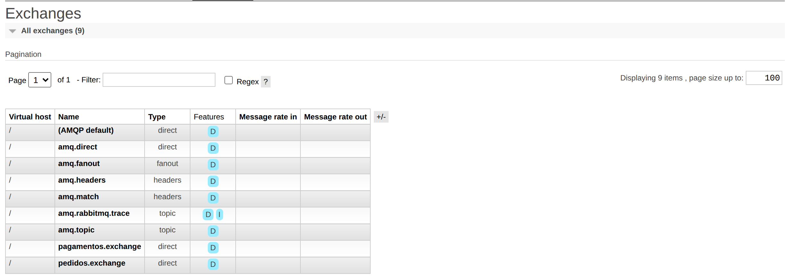
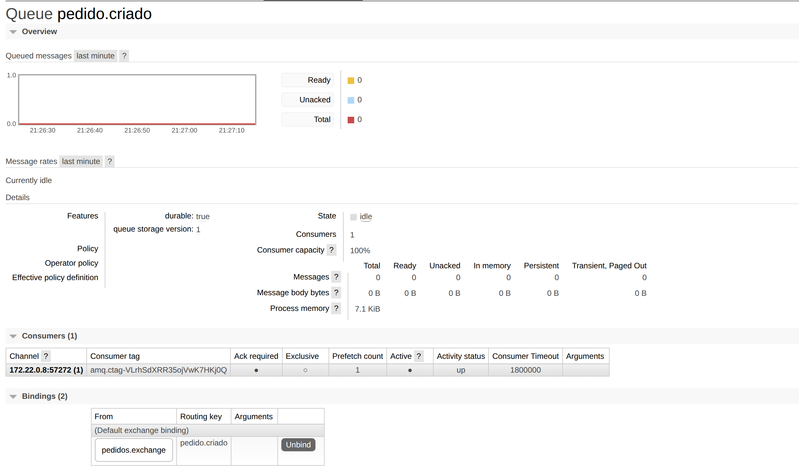
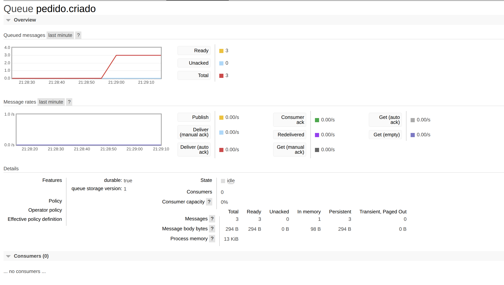
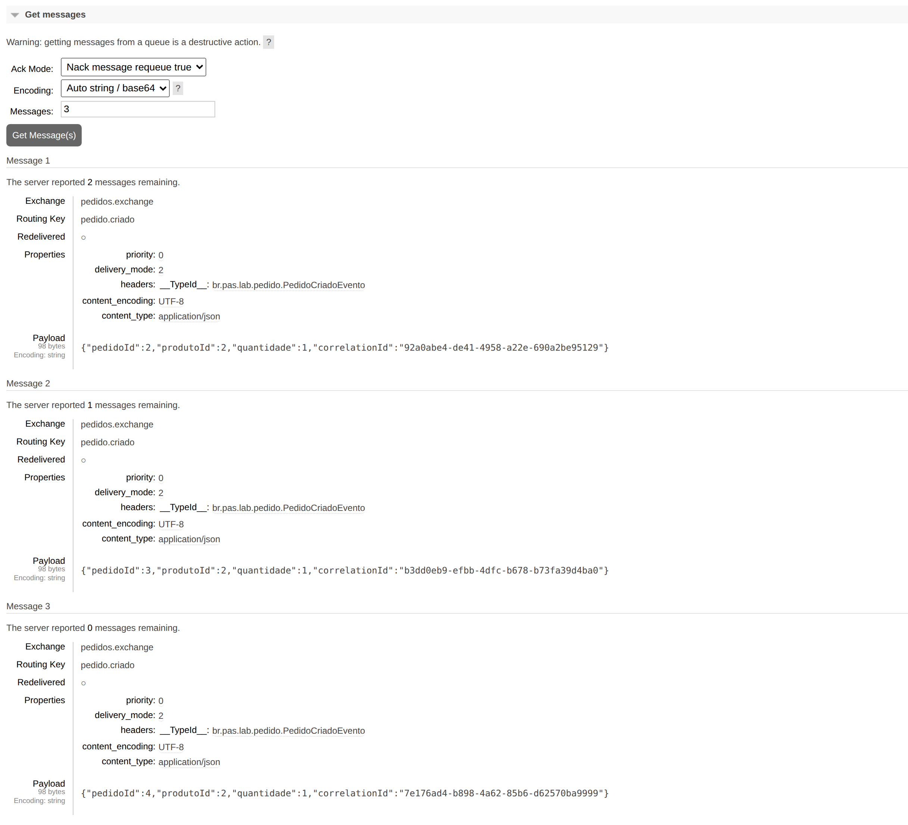
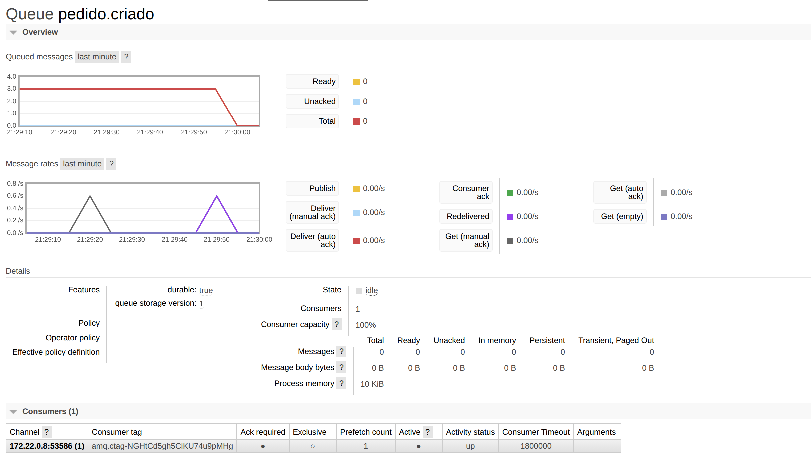
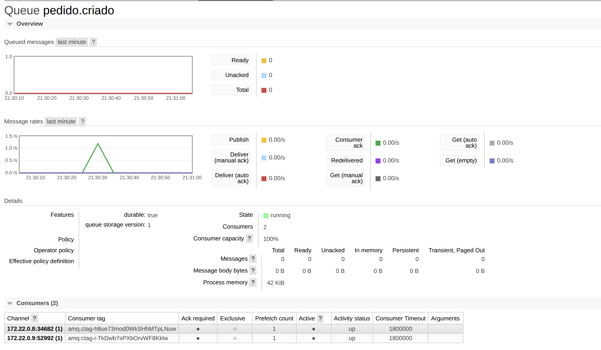
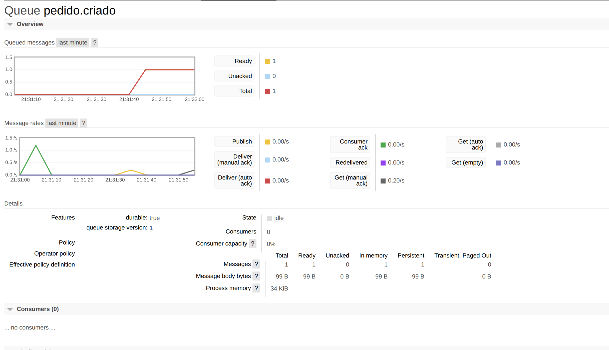
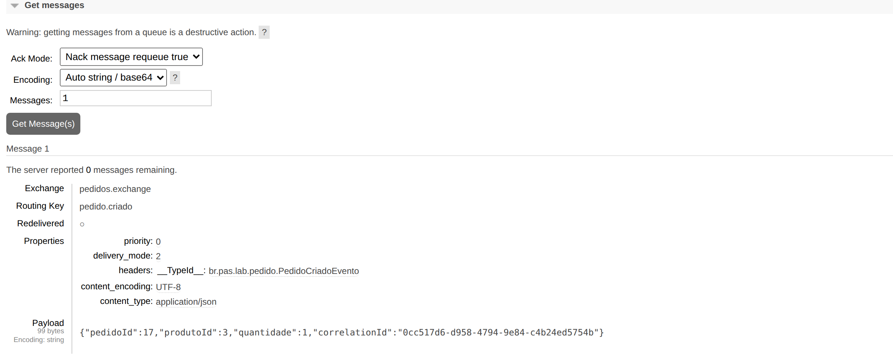
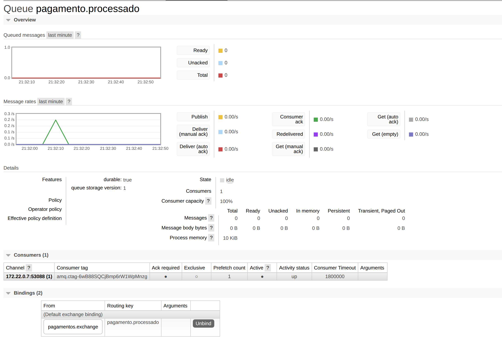

A plataforma de comércio eletrônico foi implementada com três microsserviços em Java 17 e Spring Boot 4.1 — Pedido, Estoque e Pagamento —, cada um com o seu próprio PostgreSQL 16, comunicando-se por REST (Pedido → Estoque) e por RabbitMQ (Pedido → Pagamento → Pedido), tudo orquestrado pelo Docker Compose. O documento segue as cinco partes pedidas na entrega; o código-fonte completo está no Apêndice A.
Todas as evidências (saídas de terminal e prints do painel do RabbitMQ) vêm de uma única execução real, feita em 05/10/2026 a partir de bancos vazios e na ordem do roteiro. Os pedidos ganharam os números de 1 a 17 nessa execução, conforme a tabela abaixo. Os logs dos serviços estão em UTC (00:27 UTC de 06/10 = 21:27 de 05/10 em Brasília); o painel do RabbitMQ mostra o horário local.
| Pedidos | Etapa do roteiro | Resultado |
|---|---|---|
| 1 | Etapa 7 — teste funcional | PAGO |
| — | Etapa 3 — regras de negócio e experimento de consistência | 4 tentativas recusadas; nenhum pedido criado |
| 2 a 4 | Etapas 8 e 9 — Pagamento parado e recuperação | PAGO após a volta do Pagamento |
| 5 a 10 | Etapa 10 — duas instâncias de Pagamento, sem atraso | pedido 5 REJEITADO; demais PAGO |
| 11 a 16 | Etapa 10 — duas instâncias de Pagamento, atraso de 1 s | pedidos 14 e 16 REJEITADO; demais PAGO |
| 17 | Etapa 11 — investigação de incidente | AGUARDANDO_PAGAMENTO durante o incidente; PAGO após a recuperação |
pedido.criado e pagamento.processado). O correlationId gerado pelo Pedido viaja
no cabeçalho X-Correlation-Id em ① e no corpo dos eventos em ②–⑤.PUT /produtos/{id}/reservar. Com 409
(estoque insuficiente) ou 404 (produto inexistente) o fluxo termina: não há pedido nem evento.AGUARDANDO_PAGAMENTO e publica
pedido.criado em pedidos.exchange. Se a gravação falhar depois da reserva, chama
PUT /produtos/{id}/liberar para desfazê-la (compensação).pagamento-db e registra no log.pagamento.processado com
APROVADO ou REJEITADO em pagamentos.exchange.PAGO ou
REJEITADO no seu próprio banco.| Componente | Responsabilidade | Banco | Interfaces |
|---|---|---|---|
| Pedido Service | Cria e consulta pedidos; coordena reserva, compensação e publicação do evento. | pedido-db (tabela pedido) | REST POST /pedidos, GET /pedidos, GET /pedidos/{id}; publica pedido.criado; consome pagamento.processado. |
| Estoque Service | Catálogo e quantidades; reserva atômica e liberação de unidades. | estoque-db (tabela produto) | REST GET /produtos, GET /produtos/{id}, PUT /produtos/{id}/reservar, PUT /produtos/{id}/liberar. |
| Pagamento Service | Processa o pagamento de cada pedido criado. | pagamento-db (tabela pagamento) | Consome pedido.criado; publica pagamento.processado. Não expõe HTTP. |
| RabbitMQ 3.13 | Broker de mensagens. | — | Exchanges pedidos.exchange e pagamentos.exchange (direct) e filas duráveis. |
O roteiro pede que se demonstre que cada serviço tem o próprio banco e que nenhum acessa o banco de outro. No
Compose, cada serviço recebe a URL de um único banco, e nenhuma classe Java abre conexão por conta própria
(Figura 1). Cada banco contém apenas a tabela do seu serviço (Figura 2). O único caminho do Pedido até
o Estoque é o EstoqueClient, que faz chamadas REST (Figura 3). O Pagamento nunca altera o pedido
diretamente: publica pagamento.processado e o próprio Pedido atualiza seu banco (Etapa 12).
$ grep -n 'SPRING_DATASOURCE_URL' docker-compose.yml; grep -rn --include='*.java' -lE 'pedido-db|estoque-db|jdbc:' */src/main/java || echo '(nenhuma classe Java abre conexão direta com banco)' 60: SPRING_DATASOURCE_URL: jdbc:postgresql://estoque-db:5432/estoque 72: SPRING_DATASOURCE_URL: jdbc:postgresql://pedido-db:5432/pedido 93: SPRING_DATASOURCE_URL: jdbc:postgresql://pagamento-db:5432/pagamento (nenhuma classe Java abre conexão direta com banco)
$ for s in estoque pedido pagamento; do echo "== $s-db"; docker compose exec -T $s-db psql -U $s -d $s -Atc "select table_name from information_schema.tables where table_schema='public'"; done == estoque-db produto == pedido-db pedido == pagamento-db pagamento
$ grep -rn --include='*.java' -E 'estoque.service.url|uri\(' pedido-service/src/main/java pedido-service/src/main/java/br/pas/lab/pedido/EstoqueClient.java:26: public EstoqueClient(@Value("${estoque.service.url}") String baseUrl) { pedido-service/src/main/java/br/pas/lab/pedido/EstoqueClient.java:37: .uri("/produtos/{id}/reservar", produtoId) pedido-service/src/main/java/br/pas/lab/pedido/EstoqueClient.java:60: .uri("/produtos/{id}/liberar", produtoId)
O código está no repositório github.com/Osmario-Filho/pas-lab-pratico-avaliacao e listado na íntegra no Apêndice A. A estrutura segue a pedida no roteiro:
pas-lab-pratico-avaliacao ├── pedido-service # Aluno A — Etapa 2; integrações das Etapas 3, 5, 11 e 12 ├── estoque-service # Aluno B — Etapa 1; liberação (compensação) da Etapa 3 ├── pagamento-service # dupla — Etapas 6 e 12 └── docker-compose.yml # dupla — Etapa 4 (sobe também pedido-db, estoque-db, pagamento-db e rabbitmq)
| Serviço | Classes principais |
|---|---|
| Pedido | PedidoController (REST e geração do correlationId), PedidoService (reservar → gravar → publicar, compensação e atualização do status), EstoqueClient (REST para o Estoque, timeouts de 3 s e 5 s), PedidoEventoPublisher, PagamentoProcessadoListener, RabbitConfig, entidade Pedido e enum StatusPedido. |
| Estoque | ProdutoController, ProdutoService, ProdutoRepository (reserva com um único UPDATE ... WHERE quantidade >= :n, que impede estoque negativo em reservas simultâneas), entidade Produto, schema.sql e data.sql com os dados iniciais. |
| Pagamento | PedidoCriadoListener (@RabbitListener da fila pedido.criado), PagamentoService (sorteio com taxa de aprovação de 0,8, idempotente para reentregas), RabbitConfig, entidade Pagamento. |
Os três serviços têm testes automatizados (./mvnw test), que sobem a aplicação com H2 no lugar do
PostgreSQL: 12 no Estoque, 16 no Pedido e 4 no Pagamento, todos passando.
O roteiro admite modificações; as feitas foram estas:
status do pedido é o enum StatusPedido, gravado como texto na coluna VARCHAR(50) do
roteiro; o status inicial é atribuído no construtor de Pedido. O Pagamento usa
StatusPagamento (APROVADO/REJEITADO).POST /pedidos responde 201 Created com Location e o cabeçalho
X-Correlation-Id; as APIs devolvem DTOs (PedidoResponse, ProdutoResponse) em vez das
entidades; erros seguem o formato {"mensagem": "..."} do roteiro.RestClient (sucessor do RestTemplate do exemplo), com timeouts.PUT /produtos/{id}/liberar no Estoque, para a compensação da Etapa 3.pagamentos.exchange e a fila pagamento.processado.PEDIDO_SIMULAR_FALHA_APOS_RESERVA e
PEDIDO_COMPENSACAO_HABILITADA (Etapa 3) e PAGAMENTO_ATRASO_MS (Etapa 10).404 do Estoque é "Produto inexistente"; o ? do roteiro foi tratado como erro de digitação.O arquivo é o do roteiro, com duas diferenças: o pedido-service recebe as variáveis do experimento de
consistência e o pagamento-service recebe o atraso opcional do experimento de escala. Todas têm valor
padrão, então docker compose up sobe o sistema no comportamento normal.
services:
rabbitmq:
image: rabbitmq:3.13-management
ports:
- "5672:5672"
- "15672:15672"
healthcheck:
test: ["CMD", "rabbitmq-diagnostics", "-q", "ping"]
interval: 10s
timeout: 5s
retries: 10
estoque-db:
image: postgres:16
environment:
POSTGRES_DB: estoque
POSTGRES_USER: estoque
POSTGRES_PASSWORD: estoque
volumes:
- estoque-data:/var/lib/postgresql/data
healthcheck:
test: ["CMD-SHELL", "pg_isready -U estoque -d estoque"]
interval: 5s
timeout: 3s
retries: 10
pedido-db:
image: postgres:16
environment:
POSTGRES_DB: pedido
POSTGRES_USER: pedido
POSTGRES_PASSWORD: pedido
volumes:
- pedido-data:/var/lib/postgresql/data
healthcheck:
test: ["CMD-SHELL", "pg_isready -U pedido -d pedido"]
interval: 5s
timeout: 3s
retries: 10
pagamento-db:
image: postgres:16
environment:
POSTGRES_DB: pagamento
POSTGRES_USER: pagamento
POSTGRES_PASSWORD: pagamento
volumes:
- pagamento-data:/var/lib/postgresql/data
healthcheck:
test: ["CMD-SHELL", "pg_isready -U pagamento -d pagamento"]
interval: 5s
timeout: 3s
retries: 10
estoque-service:
build: ./estoque-service
ports:
- "8081:8080"
environment:
SPRING_DATASOURCE_URL: jdbc:postgresql://estoque-db:5432/estoque
SPRING_DATASOURCE_USERNAME: estoque
SPRING_DATASOURCE_PASSWORD: estoque
depends_on:
estoque-db:
condition: service_healthy
pedido-service:
build: ./pedido-service
ports:
- "8080:8080"
environment:
SPRING_DATASOURCE_URL: jdbc:postgresql://pedido-db:5432/pedido
SPRING_DATASOURCE_USERNAME: pedido
SPRING_DATASOURCE_PASSWORD: pedido
SPRING_RABBITMQ_HOST: rabbitmq
ESTOQUE_SERVICE_URL: http://estoque-service:8080
# Experimento de consistência (Etapa 3). Ex.: PEDIDO_SIMULAR_FALHA_APOS_RESERVA=true docker compose up -d pedido-service
PEDIDO_SIMULAR_FALHA_APOS_RESERVA: ${PEDIDO_SIMULAR_FALHA_APOS_RESERVA:-false}
PEDIDO_COMPENSACAO_HABILITADA: ${PEDIDO_COMPENSACAO_HABILITADA:-true}
depends_on:
pedido-db:
condition: service_healthy
rabbitmq:
condition: service_healthy
estoque-service:
condition: service_started
pagamento-service:
build: ./pagamento-service
expose:
- "8080"
environment:
SPRING_DATASOURCE_URL: jdbc:postgresql://pagamento-db:5432/pagamento
SPRING_DATASOURCE_USERNAME: pagamento
SPRING_DATASOURCE_PASSWORD: pagamento
SPRING_RABBITMQ_HOST: rabbitmq
# Atraso opcional (ms) para visualizar a divisão de trabalho entre instâncias (Etapa 10).
PAGAMENTO_ATRASO_MS: ${PAGAMENTO_ATRASO_MS:-0}
depends_on:
pagamento-db:
condition: service_healthy
rabbitmq:
condition: service_healthy
volumes:
estoque-data:
pedido-data:
pagamento-data:Comandos usados nos experimentos:
$ docker compose up -d --build # Etapa 3: falha entre a reserva e a gravação do pedido, sem e com compensação $ PEDIDO_SIMULAR_FALHA_APOS_RESERVA=true PEDIDO_COMPENSACAO_HABILITADA=false docker compose up -d pedido-service $ PEDIDO_SIMULAR_FALHA_APOS_RESERVA=true PEDIDO_COMPENSACAO_HABILITADA=true docker compose up -d pedido-service # Etapas 8 e 9 $ docker compose stop pagamento-service $ docker compose start pagamento-service # Etapa 10, sem e com 1 s de processamento por pagamento $ docker compose up -d --scale pagamento-service=2 $ PAGAMENTO_ATRASO_MS=1000 docker compose up -d --scale pagamento-service=2
Os prints abaixo são do pedido 1, criado no teste funcional da Etapa 7. As linhas de log das três aplicações
foram filtradas pelo mesmo correlationId (90dd70d4-…), que aparece destacado.
O POST /pedidos responde 201 Created, com o pedido em AGUARDANDO_PAGAMENTO e o
correlationId gerado para a requisição.
$ curl -s -i -X POST localhost:8080/pedidos -H 'Content-Type: application/json' -d '{"produtoId": 1, "quantidade": 2}' HTTP/1.1 201 Location: /pedidos/1 X-Correlation-Id: 90dd70d4-e3a8-4d86-97fa-ebfdb2eb3b9c Content-Type: application/json Transfer-Encoding: chunked Date: Tue, 06 Oct 2026 00:27:30 GMT {"id":1,"produtoId":1,"quantidade":2,"status":"AGUARDANDO_PAGAMENTO"}
Antes da criação o Notebook tinha 10 unidades (Figura 26, mais adiante). O Estoque registra a reserva
com o correlationId recebido do Pedido, e a consulta seguinte mostra 8 unidades.
$ docker compose logs estoque-service | grep 90dd70d4-e3a8-4d86-97fa-ebfdb2eb3b9c estoque-service-1 | 2026-10-06T00:27:29.846Z INFO 1 --- [estoque-service] [nio-8080-exec-2] br.pas.lab.estoque.ProdutoService : correlationId=90dd70d4-e3a8-4d86-97fa-ebfdb2eb3b9c Produto 1 reservado: quantidade=2 restante=8
$ curl -s localhost:8081/produtos/1 {"id":1,"nome":"Notebook","quantidade":8}
O Pedido grava o pedido e publica o evento logo em seguida. A mensagem passa pelo exchange
pedidos.exchange, que a encaminha à fila pedido.criado pela routing key de mesmo nome
(Figura 28). Como o consumidor estava ativo, a mensagem do pedido 1 foi consumida em milissegundos. O conteúdo
de mensagens publicadas aparece em Figura 36, capturado com o Pagamento parado.
$ docker compose logs pedido-service | grep 90dd70d4-e3a8-4d86-97fa-ebfdb2eb3b9c pedido-service-1 | 2026-10-06T00:27:30.023Z INFO 1 --- [pedido-service] [nio-8080-exec-3] br.pas.lab.pedido.PedidoService : correlationId=90dd70d4-e3a8-4d86-97fa-ebfdb2eb3b9c Pedido 1 criado: produtoId=1 quantidade=2 status=AGUARDANDO_PAGAMENTO pedido-service-1 | 2026-10-06T00:27:30.042Z INFO 1 --- [pedido-service] [nio-8080-exec-3] b.pas.lab.pedido.PedidoEventoPublisher : correlationId=90dd70d4-e3a8-4d86-97fa-ebfdb2eb3b9c Evento publicado 1 pedido-service-1 | 2026-10-06T00:27:31.185Z INFO 1 --- [pedido-service] [ntContainer#0-1] br.pas.lab.pedido.PedidoService : correlationId=90dd70d4-e3a8-4d86-97fa-ebfdb2eb3b9c Pedido 1 atualizado para PAGO
O Pagamento recebe o evento, aprova o pagamento, grava no seu banco e publica o resultado. O Pedido, por sua vez,
muda o status para PAGO (última linha de Figura 7).
$ docker compose logs pagamento-service | grep 90dd70d4-e3a8-4d86-97fa-ebfdb2eb3b9c pagamento-service-1 | 2026-10-06T00:27:30.205Z INFO 1 --- [pagamento-service] [ntContainer#0-1] b.p.lab.pagamento.PedidoCriadoListener : correlationId=90dd70d4-e3a8-4d86-97fa-ebfdb2eb3b9c Evento pedido.criado recebido 1 pagamento-service-1 | 2026-10-06T00:27:31.034Z INFO 1 --- [pagamento-service] [ntContainer#0-1] br.pas.lab.pagamento.PagamentoService : correlationId=90dd70d4-e3a8-4d86-97fa-ebfdb2eb3b9c Pagamento aprovado 1 pagamento-service-1 | 2026-10-06T00:27:31.130Z INFO 1 --- [pagamento-service] [ntContainer#0-1] b.p.lab.pagamento.PedidoCriadoListener : correlationId=90dd70d4-e3a8-4d86-97fa-ebfdb2eb3b9c Evento pagamento.processado publicado 1 APROVADO
$ docker compose exec -T pagamento-db psql -U pagamento -d pagamento -c 'select * from pagamento' id | pedido_id | status ----+-----------+---------- 1 | 1 | APROVADO (1 row)
$ curl -s localhost:8080/pedidos/1 {"id":1,"produtoId":1,"quantidade":2,"status":"PAGO"}
O PedidoService executa a ordem do roteiro: reservar estoque, criar o pedido, publicar o evento. Sem
estoque, nem o pedido nem o evento acontecem: a tentativa com 999 unidades recebe 409 e a com produto
inexistente recebe 404 (Figura 11, Figura 12). Depois delas, só o pedido 1 existe, o Notebook
continua com 8 unidades, a fila está vazia e o Pedido publicou um único evento (Figura 13, Figura 14). O Estoque
registrou as duas recusas sem alterar nada (Figura 15).
$ curl -s -i -X POST localhost:8080/pedidos -H 'Content-Type: application/json' -d '{"produtoId": 1, "quantidade": 999}' | grep -E '^HTTP|^\{' HTTP/1.1 409 {"mensagem":"Estoque insuficiente"}
$ curl -s -i -X POST localhost:8080/pedidos -H 'Content-Type: application/json' -d '{"produtoId": 42, "quantidade": 1}' | grep -E '^HTTP|^\{' HTTP/1.1 404 {"mensagem":"Produto inexistente"}
$ curl -s localhost:8080/pedidos; echo; curl -s localhost:8081/produtos/1; echo; docker compose exec -T rabbitmq rabbitmqctl list_queues -q name messages_ready consumers | grep pedido.criado [{"id":1,"produtoId":1,"quantidade":2,"status":"PAGO"}] {"id":1,"nome":"Notebook","quantidade":8} pedido.criado 0 1
$ docker compose logs pedido-service | grep -c 'Evento publicado' 1
$ docker compose logs estoque-service | grep 'Reserva recusada' estoque-service-1 | 2026-10-06T00:27:41.574Z WARN 1 --- [estoque-service] [nio-8080-exec-3] br.pas.lab.estoque.ProdutoService : correlationId=89f55613-639e-490f-9c4b-78160d0d7aae Reserva recusada: produto 1 sem estoque suficiente para 999 unidade(s) estoque-service-1 | 2026-10-06T00:27:41.659Z WARN 1 --- [estoque-service] [nio-8080-exec-6] br.pas.lab.estoque.ProdutoService : correlationId=f9e64d14-c394-4570-80b6-1614ab76a361 Reserva recusada: produto 42 inexistente
A falha entre a reserva e a criação do pedido foi provocada com
PEDIDO_SIMULAR_FALHA_APOS_RESERVA=true, que faz o PedidoService lançar uma exceção logo depois da
reserva. O experimento foi feito duas vezes: primeiro com a compensação desligada, para observar o problema; depois
ligada, para observar a solução.
$ PEDIDO_SIMULAR_FALHA_APOS_RESERVA=true PEDIDO_COMPENSACAO_HABILITADA=false docker compose up -d pedido-service 2>&1 | grep pedido-service Container pas-lab-pratico-avaliacao-pedido-service-1 Recreate Container pas-lab-pratico-avaliacao-pedido-service-1 Recreated Container pas-lab-pratico-avaliacao-pedido-service-1 Starting Container pas-lab-pratico-avaliacao-pedido-service-1 Started
$ curl -s localhost:8081/produtos/1 {"id":1,"nome":"Notebook","quantidade":8}
$ curl -s -i -X POST localhost:8080/pedidos -H 'Content-Type: application/json' -d '{"produtoId": 1, "quantidade": 3}' | grep -E '^HTTP|^\{' HTTP/1.1 500 {"mensagem":"Falha simulada após a reserva do estoque"}
$ curl -s localhost:8081/produtos/1; echo; curl -s localhost:8080/pedidos {"id":1,"nome":"Notebook","quantidade":5} [{"id":1,"produtoId":1,"quantidade":2,"status":"PAGO"}]
$ docker compose logs estoque-service pedido-service | grep -E 'Falha ao criar|Compensação desabilitada|reservado: quantidade=3' pedido-service-1 | 2026-10-06T00:28:05.865Z ERROR 1 --- [pedido-service] [nio-8080-exec-3] br.pas.lab.pedido.PedidoService : correlationId=66cdaf08-abd8-45af-98e4-31cef2a0402a Falha ao criar pedido depois de reservar produto 1 (quantidade=3): Falha simulada após a reserva do estoque pedido-service-1 | 2026-10-06T00:28:05.866Z WARN 1 --- [pedido-service] [nio-8080-exec-3] br.pas.lab.pedido.PedidoService : correlationId=66cdaf08-abd8-45af-98e4-31cef2a0402a Compensação desabilitada: 3 unidade(s) do produto 1 continuam reservadas sem pedido estoque-service-1 | 2026-10-06T00:28:05.826Z INFO 1 --- [estoque-service] [nio-8080-exec-2] br.pas.lab.estoque.ProdutoService : correlationId=66cdaf08-abd8-45af-98e4-31cef2a0402a Produto 1 reservado: quantidade=3 restante=5
O que aconteceu com o estoque?
A reserva foi confirmada no estoque-db e ficou lá: o Notebook passou de 8 para 5 unidades
(Figura 17, Figura 19). Essas 3 unidades ficaram presas, reservadas para um pedido que não
existe. O Estoque não tem como saber que o passo seguinte, em outro serviço, falhou.
O pedido foi criado?
Não. O cliente recebeu 500, GET /pedidos continuou mostrando só o pedido 1 e nenhum evento
foi publicado: o log do Pedido registra a falha logo depois da reserva (Figura 20).
Existe uma transação única envolvendo os dois serviços?
Não. A reserva é uma transação local do Estoque, confirmada no estoque-db antes mesmo de o
PUT responder; a gravação do pedido seria outra transação local, no pedido-db. Um
@Transactional no Pedido só alcançaria o próprio banco — por isso o método criar nem
o usa. Uma transação única exigiria um protocolo distribuído como o two-phase commit, que REST não oferece e que
acoplaria a disponibilidade dos dois serviços, contra a ideia de banco por serviço.
Como o sistema poderia desfazer a reserva realizada?
Com uma operação inversa, executada pelo próprio Estoque: devolver as unidades reservadas. Para isso o Estoque
ganhou PUT /produtos/{id}/liberar. Chamando-o à mão com as 3 unidades, o Notebook voltou a 8
(Figura 21). No código, o PedidoService faz essa chamada automaticamente quando a gravação do pedido
falha: com a compensação ligada, a mesma falha reservou 3 unidades e as devolveu 71 ms depois, e o estoque
terminou em 8 (Figura 22, Figura 23, Figura 24).
Que mecanismo poderia ser utilizado para realizar essa compensação?
O padrão Saga com transações de compensação: cada passo confirma localmente e,
se um passo posterior falha, os anteriores são desfeitos por operações inversas, em vez de rollback. Aqui a saga é
orquestrada pelo Pedido, de forma síncrona. Ela tem um limite: se o processo do Pedido cair entre a reserva e a
gravação, ninguém chama /liberar. Para cobrir esse caso seria preciso tornar a saga durável — por
exemplo, gravar a intenção num outbox antes da reserva e retomá-la depois, ou dar prazo de validade às
reservas no Estoque — e usar retentativas idempotentes na compensação.
$ curl -s -X PUT localhost:8081/produtos/1/liberar -H 'Content-Type: application/json' -d '{"quantidade": 3}' {"id":1,"nome":"Notebook","quantidade":8}
$ curl -s -i -X POST localhost:8080/pedidos -H 'Content-Type: application/json' -d '{"produtoId": 1, "quantidade": 3}' | grep -E '^HTTP|^\{' HTTP/1.1 500 {"mensagem":"Falha simulada após a reserva do estoque"}
$ curl -s localhost:8081/produtos/1; echo; curl -s localhost:8080/pedidos {"id":1,"nome":"Notebook","quantidade":8} [{"id":1,"produtoId":1,"quantidade":2,"status":"PAGO"}]
$ docker compose logs estoque-service pedido-service | grep a231671b-ef92-4877-9e97-7e5c4103daab estoque-service-1 | 2026-10-06T00:28:31.252Z INFO 1 --- [estoque-service] [nio-8080-exec-8] br.pas.lab.estoque.ProdutoService : correlationId=a231671b-ef92-4877-9e97-7e5c4103daab Produto 1 reservado: quantidade=3 restante=5 estoque-service-1 | 2026-10-06T00:28:31.323Z INFO 1 --- [estoque-service] [nio-8080-exec-9] br.pas.lab.estoque.ProdutoService : correlationId=a231671b-ef92-4877-9e97-7e5c4103daab Produto 1 liberado (compensação): quantidade=3 restante=8 pedido-service-1 | 2026-10-06T00:28:31.304Z ERROR 1 --- [pedido-service] [nio-8080-exec-3] br.pas.lab.pedido.PedidoService : correlationId=a231671b-ef92-4877-9e97-7e5c4103daab Falha ao criar pedido depois de reservar produto 1 (quantidade=3): Falha simulada após a reserva do estoque pedido-service-1 | 2026-10-06T00:28:31.331Z INFO 1 --- [pedido-service] [nio-8080-exec-3] br.pas.lab.pedido.PedidoService : correlationId=a231671b-ef92-4877-9e97-7e5c4103daab Reserva compensada: 3 unidade(s) do produto 1 devolvidas ao estoque
Verificar: o Pedido consegue acessar o Estoque?
Sim. Os sete contêineres sobem e os bancos e o RabbitMQ ficam saudáveis antes dos serviços que dependem deles
(Figura 25). De dentro do contêiner do Pedido, o Estoque responde pelo nome do serviço na rede do Compose,
http://estoque-service:8080, que é o valor de ESTOQUE_SERVICE_URL (Figura 26). O teste
funcional confirma a integração: o Estoque registra a reserva com o correlationId enviado pelo Pedido
(Figura 5).
$ docker compose ps --format 'table {{.Service}}\t{{.State}}\t{{.Status}}\t{{.Ports}}' SERVICE STATE STATUS PORTS estoque-db running Up About a minute (healthy) 5432/tcp estoque-service running Up About a minute 0.0.0.0:8081->8080/tcp, [::]:8081->8080/tcp pagamento-db running Up About a minute (healthy) 5432/tcp pagamento-service running Up About a minute 8080/tcp pedido-db running Up About a minute (healthy) 5432/tcp pedido-service running Up About a minute 0.0.0.0:8080->8080/tcp, [::]:8080->8080/tcp rabbitmq running Up About a minute (healthy) 0.0.0.0:5672->5672/tcp, [::]:5672->5672/tcp, 0.0.0.0:15672->15672/tcp, [::]:15672->15672/tcp
$ docker compose exec -T pedido-service curl -s http://estoque-service:8080/produtos [{"id":1,"nome":"Notebook","quantidade":10},{"id":2,"nome":"Mouse","quantidade":50},{"id":3,"nome":"Teclado","quantidade":20}]
pedidos.exchange: existe, é do tipo direct e durável (D),
ao lado de pagamentos.exchange (Figura 27).pedido.criado: durável, ligada a pedidos.exchange pela routing key
pedido.criado (Figura 28, seção Bindings).--scale pagamento-service=2 (Figura 49).

Por que o Pedido Service publica em um Exchange em vez de enviar diretamente para uma Queue?
Para não depender de quem vai receber. O produtor só conhece o exchange e a routing key; para quais filas a
mensagem vai é decidido pelos bindings, que são configuração do broker. Assim, outro interessado no evento
(notificação ao cliente, emissão de nota fiscal) pode ligar sua própria fila a pedidos.exchange com a
routing key pedido.criado e passar a receber uma cópia de cada evento, sem mudar o Pedido Service. Da
mesma forma, é possível trocar ou reorganizar as filas sem tocar no produtor. No AMQP, aliás, nem existe envio
direto: publicar "para uma fila" é publicar no exchange padrão.
Qual é a diferença entre Exchange, Queue e Consumer?
O exchange recebe as mensagens publicadas e as roteia segundo seu tipo e seus bindings
(direct: routing key igual à do binding); não armazena nada. A fila guarda as mensagens
em ordem até que sejam consumidas e confirmadas; aqui é durável e as mensagens são persistentes
(delivery_mode: 2, Figura 36), então sobrevivem até a um reinício do broker. O
consumer é a aplicação inscrita numa fila — o @RabbitListener do Pagamento —,
que recebe a mensagem, processa e confirma (ack); só com o ack a mensagem sai da fila.
O Pedido Service sabe quem consumirá o evento?
Não. O PedidoEventoPublisher conhece apenas pedidos.exchange e a routing key; o código
do Pedido não menciona o Pagamento. Tanto que ele publicou normalmente os pedidos 2 a 4 com o Pagamento fora do ar
(Etapa 8). O Pedido declara a fila pedido.criado no seu RabbitConfig, mas apenas para
garantir que ela exista e retenha mensagens mesmo se nenhum consumidor tiver subido ainda; isso define a topologia,
não quem consome.
| Verificação | Evidência | |
|---|---|---|
| 1. O estoque foi atualizado | sim | Notebook de 10 para 8 (Figura 26, Figura 6); log da reserva (Figura 5). |
| 2. Pedido criado com status AGUARDANDO_PAGAMENTO | sim | Resposta do POST (Figura 4). |
| 3. O evento pedido.criado foi publicado | sim | Evento publicado 1 no log do Pedido (Figura 7). |
| 4. O Pagamento Service consumiu o evento | sim | Evento pedido.criado recebido 1, 163 ms após a publicação (Figura 8). |
| 5. Pagamento registrado no banco do Pagamento | sim | Linha pedido_id = 1, APROVADO (Figura 9). |
| 6. Resultado do pagamento registrado no log | sim | Pagamento aprovado 1 (Figura 8). |
Com docker compose stop pagamento-service, foram criados três pedidos do Mouse (2, 3 e 4).
$ docker compose stop pagamento-service Container pas-lab-pratico-avaliacao-pagamento-service-1 Stopping Container pas-lab-pratico-avaliacao-pagamento-service-1 Stopped
$ for i in 1 2 3; do curl -s -w ' -> HTTP %{http_code}\n' -X POST localhost:8080/pedidos -H 'Content-Type: application/json' -d '{"produtoId": 2, "quantidade": 1}'; done {"id":2,"produtoId":2,"quantidade":1,"status":"AGUARDANDO_PAGAMENTO"} -> HTTP 201 {"id":3,"produtoId":2,"quantidade":1,"status":"AGUARDANDO_PAGAMENTO"} -> HTTP 201 {"id":4,"produtoId":2,"quantidade":1,"status":"AGUARDANDO_PAGAMENTO"} -> HTTP 201
$ curl -s localhost:8081/produtos/2 {"id":2,"nome":"Mouse","quantidade":50}
$ curl -s localhost:8081/produtos/2 {"id":2,"nome":"Mouse","quantidade":47}
$ docker compose exec -T rabbitmq rabbitmqctl list_queues -q name messages_ready messages_unacknowledged consumers name messages_ready messages_unacknowledged consumers pagamento.processado 0 0 1 pedido.criado 3 0 0
$ docker compose logs pedido-service | grep -E 'Pedido [2-4] criado|Evento publicado [2-4]$' pedido-service-1 | 2026-10-06T00:28:56.928Z INFO 1 --- [pedido-service] [nio-8080-exec-3] br.pas.lab.pedido.PedidoService : correlationId=92a0abe4-de41-4958-a22e-690a2be95129 Pedido 2 criado: produtoId=2 quantidade=1 status=AGUARDANDO_PAGAMENTO pedido-service-1 | 2026-10-06T00:28:56.939Z INFO 1 --- [pedido-service] [nio-8080-exec-3] b.pas.lab.pedido.PedidoEventoPublisher : correlationId=92a0abe4-de41-4958-a22e-690a2be95129 Evento publicado 2 pedido-service-1 | 2026-10-06T00:28:57.009Z INFO 1 --- [pedido-service] [nio-8080-exec-5] br.pas.lab.pedido.PedidoService : correlationId=b3dd0eb9-efbb-4dfc-b678-b73fa39d4ba0 Pedido 3 criado: produtoId=2 quantidade=1 status=AGUARDANDO_PAGAMENTO pedido-service-1 | 2026-10-06T00:28:57.011Z INFO 1 --- [pedido-service] [nio-8080-exec-5] b.pas.lab.pedido.PedidoEventoPublisher : correlationId=b3dd0eb9-efbb-4dfc-b678-b73fa39d4ba0 Evento publicado 3 pedido-service-1 | 2026-10-06T00:28:57.069Z INFO 1 --- [pedido-service] [nio-8080-exec-7] br.pas.lab.pedido.PedidoService : correlationId=7e176ad4-b898-4a62-85b6-d62570ba9999 Pedido 4 criado: produtoId=2 quantidade=1 status=AGUARDANDO_PAGAMENTO pedido-service-1 | 2026-10-06T00:28:57.071Z INFO 1 --- [pedido-service] [nio-8080-exec-7] b.pas.lab.pedido.PedidoEventoPublisher : correlationId=7e176ad4-b898-4a62-85b6-d62570ba9999 Evento publicado 4


O pedido foi criado?
Sim. Os três POST responderam 201 com status AGUARDANDO_PAGAMENTO
(Figura 30).
O estoque foi atualizado?
Sim. O Mouse passou de 50 para 47 unidades (Figura 31, Figura 32): a reserva é síncrona e não depende do Pagamento.
O sistema inteiro parou?
Não. Apenas o contêiner do Pagamento estava parado; Pedido, Estoque, bancos e RabbitMQ seguiram respondendo. O
único efeito visível foi que os pedidos ficaram em AGUARDANDO_PAGAMENTO, porque o pagamento é
assíncrono e o Pedido não espera por ele.
A mensagem foi perdida? Apresente evidências obtidas a partir da fila do RabbitMQ e dos logs.
Não. O log do Pedido mostra Evento publicado para os pedidos 2, 3 e 4 (Figura 34). A fila
pedido.criado passou a ter 3 mensagens prontas e 0 consumidores, tanto no
rabbitmqctl (Figura 33) quanto no painel (Figura 35). Lidas no painel, as mensagens são
exatamente as dos pedidos 2, 3 e 4, com os mesmos correlationIds dos logs (Figura 36). Elas estão
numa fila durável e são persistentes (delivery_mode: 2), então ficam guardadas até um consumidor
voltar — o que se confirma na Etapa 9.
$ docker compose exec -T rabbitmq rabbitmqctl list_queues -q name messages_ready consumers | grep pedido.criado pedido.criado 3 0
$ docker compose start pagamento-service Container pas-lab-pratico-avaliacao-rabbitmq-1 Waiting Container pas-lab-pratico-avaliacao-pagamento-db-1 Waiting Container pas-lab-pratico-avaliacao-pagamento-db-1 Healthy Container pas-lab-pratico-avaliacao-rabbitmq-1 Healthy Container pas-lab-pratico-avaliacao-pagamento-service-1 Starting Container pas-lab-pratico-avaliacao-pagamento-service-1 Started
$ docker compose logs pagamento-service | grep -E 'recebido [2-4]$|Pagamento (aprovado|rejeitado) [2-4]$' pagamento-service-1 | 2026-10-06T00:29:51.517Z INFO 1 --- [pagamento-service] [ntContainer#0-1] b.p.lab.pagamento.PedidoCriadoListener : correlationId=92a0abe4-de41-4958-a22e-690a2be95129 Evento pedido.criado recebido 2 pagamento-service-1 | 2026-10-06T00:29:52.272Z INFO 1 --- [pagamento-service] [ntContainer#0-1] br.pas.lab.pagamento.PagamentoService : correlationId=92a0abe4-de41-4958-a22e-690a2be95129 Pagamento aprovado 2 pagamento-service-1 | 2026-10-06T00:29:52.349Z INFO 1 --- [pagamento-service] [ntContainer#0-1] b.p.lab.pagamento.PedidoCriadoListener : correlationId=b3dd0eb9-efbb-4dfc-b678-b73fa39d4ba0 Evento pedido.criado recebido 3 pagamento-service-1 | 2026-10-06T00:29:52.356Z INFO 1 --- [pagamento-service] [ntContainer#0-1] br.pas.lab.pagamento.PagamentoService : correlationId=b3dd0eb9-efbb-4dfc-b678-b73fa39d4ba0 Pagamento aprovado 3 pagamento-service-1 | 2026-10-06T00:29:52.365Z INFO 1 --- [pagamento-service] [ntContainer#0-1] b.p.lab.pagamento.PedidoCriadoListener : correlationId=7e176ad4-b898-4a62-85b6-d62570ba9999 Evento pedido.criado recebido 4 pagamento-service-1 | 2026-10-06T00:29:52.370Z INFO 1 --- [pagamento-service] [ntContainer#0-1] br.pas.lab.pagamento.PagamentoService : correlationId=7e176ad4-b898-4a62-85b6-d62570ba9999 Pagamento aprovado 4
$ docker compose exec -T rabbitmq rabbitmqctl list_queues -q name messages_ready messages_unacknowledged consumers name messages_ready messages_unacknowledged consumers pagamento.processado 0 0 1 pedido.criado 0 0 1
$ docker compose exec -T pagamento-db psql -U pagamento -d pagamento -c 'select * from pagamento order by id' id | pedido_id | status ----+-----------+---------- 1 | 1 | APROVADO 2 | 2 | APROVADO 3 | 3 | APROVADO 4 | 4 | APROVADO (4 rows)
$ curl -s localhost:8080/pedidos [{"id":1,"produtoId":1,"quantidade":2,"status":"PAGO"},{"id":2,"produtoId":2,"quantidade":1,"status":"PAGO"},{"id":3,"produtoId":2,"quantidade":1,"status":"PAGO"},{"id":4,"produtoId":2,"quantidade":1,"status":"PAGO"}]

| Verificação | Evidência | |
|---|---|---|
| 1. As mensagens geradas durante a indisponibilidade permanecem na fila | sim | 3 prontas antes de religar (Figura 37). |
| 2. O Pagamento Service foi iniciado novamente | sim | Figura 38. |
| 3. As mensagens pendentes foram consumidas | sim | Fila vazia com 1 consumidor (Figura 40, Figura 43). |
| 4. Cada pedido foi processado | sim | Pedidos 2, 3 e 4 recebidos e aprovados (Figura 39) e atualizados para PAGO (Figura 42). |
| 5. Registros no banco do Pagamento | sim | Pagamentos 2, 3 e 4 (Figura 41). |
O processamento precisou ser repetido manualmente?
Não. Ao subir, o Pagamento se reconectou ao RabbitMQ e o broker entregou as mensagens pendentes; em menos de um segundo as três foram processadas (Figura 39). Nenhum pedido precisou ser reenviado.
O Pedido Service precisou aguardar o Pagamento Service?
Não. Os pedidos 2 a 4 foram respondidos com 201 em milissegundos, entre 00:28:56 e 00:28:57, com o Pagamento
parado. Só o status final esperou: os pagamentos saíram às 00:29:52, cerca de 55 s depois, quando o Pagamento
voltou.
O que aconteceu com as mensagens enquanto o consumidor estava indisponível?
Ficaram armazenadas na fila durável pedido.criado, no estado Ready (prontas para entrega e
sem nenhuma pendente de confirmação), com o conteúdo intacto (Figura 35, Figura 36). Quando um
consumidor voltou, foram entregues em ordem e removidas da fila à medida que o Pagamento confirmava cada uma.
O experimento foi feito duas vezes com --scale pagamento-service=2: primeiro com o processamento
normal, que leva poucos milissegundos, e depois com 1 s de processamento por pagamento
(PAGAMENTO_ATRASO_MS=1000), para que a divisão de trabalho ficasse visível nos logs.
$ docker compose up -d --scale pagamento-service=2 2>&1 | grep pagamento-service Container pas-lab-pratico-avaliacao-pagamento-service-1 Running Container pas-lab-pratico-avaliacao-pagamento-service-2 Creating Container pas-lab-pratico-avaliacao-pagamento-service-2 Created Container pas-lab-pratico-avaliacao-pagamento-service-2 Starting Container pas-lab-pratico-avaliacao-pagamento-service-2 Started
$ docker compose exec -T rabbitmq rabbitmqctl list_queues -q name messages_ready consumers | grep pedido.criado pedido.criado 0 2
$ docker compose logs pagamento-service | grep -E 'Pagamento (aprovado|rejeitado) ([5-9]|10)$' pagamento-service-1 | 2026-10-06T00:30:30.341Z INFO 1 --- [pagamento-service] [ntContainer#0-1] br.pas.lab.pagamento.PagamentoService : correlationId=edc7edb9-214b-4d76-899f-5abfb5da658e Pagamento rejeitado 5 pagamento-service-1 | 2026-10-06T00:30:30.450Z INFO 1 --- [pagamento-service] [ntContainer#0-1] br.pas.lab.pagamento.PagamentoService : correlationId=b2f11ad7-ba86-48d4-8f9e-f6a0b804a665 Pagamento aprovado 7 pagamento-service-1 | 2026-10-06T00:30:30.504Z INFO 1 --- [pagamento-service] [ntContainer#0-1] br.pas.lab.pagamento.PagamentoService : correlationId=f4db9ef2-434c-4e4a-8129-d990536f691f Pagamento aprovado 8 pagamento-service-1 | 2026-10-06T00:30:30.553Z INFO 1 --- [pagamento-service] [ntContainer#0-1] br.pas.lab.pagamento.PagamentoService : correlationId=392fbf20-fad3-497c-bad1-7efc4f1fff25 Pagamento aprovado 9 pagamento-service-1 | 2026-10-06T00:30:30.600Z INFO 1 --- [pagamento-service] [ntContainer#0-1] br.pas.lab.pagamento.PagamentoService : correlationId=ca609f0b-4c9c-40f9-8eb6-7eee76ed8fa1 Pagamento aprovado 10 pagamento-service-2 | 2026-10-06T00:30:31.320Z INFO 1 --- [pagamento-service] [ntContainer#0-1] br.pas.lab.pagamento.PagamentoService : correlationId=45da6533-4749-4e8b-953a-0e7d69fe28be Pagamento aprovado 6
$ docker compose logs pagamento-service | grep -E 'Pagamento (aprovado|rejeitado) 1[1-6]$' pagamento-service-2 | 2026-10-06T00:31:06.554Z INFO 1 --- [pagamento-service] [ntContainer#0-1] br.pas.lab.pagamento.PagamentoService : correlationId=42845b96-0d1a-4bb8-a9b8-feedf32bffd5 Pagamento aprovado 12 pagamento-service-2 | 2026-10-06T00:31:07.663Z INFO 1 --- [pagamento-service] [ntContainer#0-1] br.pas.lab.pagamento.PagamentoService : correlationId=2730331f-0973-4679-8150-3be0e8f35298 Pagamento rejeitado 14 pagamento-service-2 | 2026-10-06T00:31:08.685Z INFO 1 --- [pagamento-service] [ntContainer#0-1] br.pas.lab.pagamento.PagamentoService : correlationId=93d2c9a1-0af9-43a8-9c3d-2a587d4eb4e0 Pagamento rejeitado 16 pagamento-service-1 | 2026-10-06T00:31:06.560Z INFO 1 --- [pagamento-service] [ntContainer#0-1] br.pas.lab.pagamento.PagamentoService : correlationId=941ac841-688d-46f7-8861-06a82ab9e12f Pagamento aprovado 11 pagamento-service-1 | 2026-10-06T00:31:07.649Z INFO 1 --- [pagamento-service] [ntContainer#0-1] br.pas.lab.pagamento.PagamentoService : correlationId=80c114b9-88a2-4d7b-b7cc-1d72c06efd83 Pagamento aprovado 13 pagamento-service-1 | 2026-10-06T00:31:08.685Z INFO 1 --- [pagamento-service] [ntContainer#0-1] br.pas.lab.pagamento.PagamentoService : correlationId=75aa8e55-5aab-400a-baec-b34a95412951 Pagamento aprovado 15
$ docker compose exec -T pagamento-db psql -U pagamento -d pagamento -c 'select pedido_id, count(*) from pagamento group by pedido_id having count(*) > 1' pedido_id | count -----------+------- (0 rows)

As mensagens foram distribuídas?
Sim. Com atraso, as instâncias se alternaram: pagamento-service-1 processou os pedidos 11, 13 e
15; pagamento-service-2, os pedidos 12, 14 e 16 (Figura 47). Sem atraso, a divisão foi desigual:
a instância 2, recém-criada, recebeu o pedido 6 e levou cerca de 1 s nele (JVM e conexões ainda "frias");
enquanto isso, a instância 1 processou os pedidos 5, 7, 8, 9 e 10 em cerca de 50 ms cada (Figura 46). Isso
mostra como o RabbitMQ distribui com prefetch 1: entrega a próxima mensagem a um consumidor que não tem
nenhuma pendente. A divisão segue a capacidade livre de cada instância, não uma alternância fixa.
Apenas uma instância processou cada mensagem?
Sim. Cada pedido aparece no log de uma única instância (Figura 46, Figura 47), e nenhum pedido
tem mais de um pagamento no banco (Figura 48). Consumidores da mesma fila competem pelas mensagens
(competing consumers), e cada mensagem é entregue a um só. Se uma instância cair antes do ack, a mensagem
volta para a fila e vai para outra; o PagamentoService trata essa reentrega mantendo o resultado já
gravado, sem sortear de novo.
Observe o comportamento das duas instâncias de Pagamento. Em seguida, discuta quais características da arquitetura permitem que apenas esse serviço seja escalado independentemente dos demais.
As duas instâncias consumiram a mesma fila sem nenhuma coordenação entre si nem mudança nos outros serviços. O que permite isso:
pagamento-db; qualquer instância pode processar qualquer pedido.pagamento-db; multiplicar suas instâncias
não afeta os bancos dos outros.expose); o Pedido e o Estoque publicam as
portas fixas 8080 e 8081, e por isso não poderiam ser escalados com --scale sem antes mudar essa
configuração.Em quais circunstâncias o Estoque Service também precisaria ser escalado?
Quando ele virasse o gargalo do caminho síncrono. Toda criação de pedido espera a reserva no Estoque, então a
vazão de pedidos fica limitada pela dele: em picos (promoções, Black Friday) as reservas ficariam lentas, e acima de
5 s o Pedido desiste e responde 503. Também seria preciso escalar se o Pedido fosse escalado, ou
se a leitura do catálogo (GET /produtos), normalmente bem mais frequente que a compra, crescesse.
Escalar o Estoque mantém a consistência, porque a reserva é um único UPDATE ... WHERE quantidade >= n
no banco compartilhado pelas instâncias. O limite passa a ser o próprio estoque-db, sobretudo quando
muitos pedidos disputam o mesmo produto.
O PedidoController gera um correlationId (UUID.randomUUID()) por requisição.
O Pedido o envia ao Estoque no cabeçalho X-Correlation-Id, o coloca no campo correlationId do
evento pedido.criado, e o Pagamento o repassa no evento pagamento.processado. Os quatro logs
do roteiro existem com esse formato: Pedido {} criado, Produto {} reservado,
Evento publicado {} e Pagamento aprovado {} (ou rejeitado). Assim, um único
grep reconstrói o caminho de um pedido nos três serviços, como em Figura 5,
Figura 7 e Figura 8.
Para reproduzir o incidente, o Pagamento foi parado (as duas instâncias) antes da criação do pedido 17. A investigação usou apenas os logs e o RabbitMQ, a partir da reclamação do usuário:
$ curl -s localhost:8080/pedidos/17 {"id":17,"produtoId":3,"quantidade":1,"status":"AGUARDANDO_PAGAMENTO"}
$ docker compose logs pedido-service | grep 'Pedido 17 ' pedido-service-1 | 2026-10-06T00:31:38.088Z INFO 1 --- [pedido-service] [nio-8080-exec-5] br.pas.lab.pedido.PedidoService : correlationId=0cc517d6-d958-4794-9e84-c4b24ed5754b Pedido 17 criado: produtoId=3 quantidade=1 status=AGUARDANDO_PAGAMENTO
$ docker compose logs pedido-service | grep 0cc517d6-d958-4794-9e84-c4b24ed5754b pedido-service-1 | 2026-10-06T00:31:38.088Z INFO 1 --- [pedido-service] [nio-8080-exec-5] br.pas.lab.pedido.PedidoService : correlationId=0cc517d6-d958-4794-9e84-c4b24ed5754b Pedido 17 criado: produtoId=3 quantidade=1 status=AGUARDANDO_PAGAMENTO pedido-service-1 | 2026-10-06T00:31:38.091Z INFO 1 --- [pedido-service] [nio-8080-exec-5] b.pas.lab.pedido.PedidoEventoPublisher : correlationId=0cc517d6-d958-4794-9e84-c4b24ed5754b Evento publicado 17
$ docker compose logs estoque-service | grep 0cc517d6-d958-4794-9e84-c4b24ed5754b estoque-service-1 | 2026-10-06T00:31:38.074Z INFO 1 --- [estoque-service] [nio-8080-exec-4] br.pas.lab.estoque.ProdutoService : correlationId=0cc517d6-d958-4794-9e84-c4b24ed5754b Produto 3 reservado: quantidade=1 restante=19
$ docker compose logs pagamento-service | grep 0cc517d6-d958-4794-9e84-c4b24ed5754b || echo '(nenhuma linha com esse correlationId)' (nenhuma linha com esse correlationId)
$ docker compose ps -a pagamento-service --format 'table {{.Name}}\t{{.State}}\t{{.Status}}' NAME STATE STATUS pas-lab-pratico-avaliacao-pagamento-service-1 exited Exited (137) 4 seconds ago pas-lab-pratico-avaliacao-pagamento-service-2 exited Exited (137) 4 seconds ago
$ docker compose exec -T rabbitmq rabbitmqctl list_queues -q name messages_ready messages_unacknowledged consumers name messages_ready messages_unacknowledged consumers pagamento.processado 0 0 1 pedido.criado 1 0 0


O pedido foi criado?
Sim: Pedido 17 criado às 00:31:38.088, com status AGUARDANDO_PAGAMENTO
(Figura 51).
O estoque foi reservado?
Sim: Produto 3 reservado: quantidade=1 restante=19 às 00:31:38.074, com o mesmo
correlationId (Figura 53).
O evento pedido.criado foi publicado?
Sim: Evento publicado 17 às 00:31:38.091 (Figura 52).
O Pagamento Service recebeu o evento?
Não. Não existe nenhuma linha com esse correlationId no log do Pagamento, nem o
Evento pedido.criado recebido 17 que aparece para todos os outros pedidos (Figura 54).
O pagamento foi processado?
Não. Não há Pagamento aprovado/rejeitado 17, nem evento pagamento.processado, nem a linha
Pedido 17 atualizado no Pedido; por isso o status ficou em AGUARDANDO_PAGAMENTO.
Em qual etapa ocorreu o problema?
No consumo do evento pelo Pagamento Service. Criação, reserva e publicação foram concluídas; o evento chegou ao RabbitMQ, mas não havia consumidor para recebê-lo, porque as instâncias do Pagamento estavam paradas (Figura 55). Pedido, Estoque e broker funcionaram.
Qual evidência nos logs permite identificar a etapa da falha?
O rastro do correlationId 0cc517d6-… termina em Evento publicado 17 no
Pedido e não aparece em nenhuma linha do Pagamento. A ausência da linha Evento pedido.criado recebido 17
situa a falha entre a publicação e o consumo. O docker compose ps com o Pagamento em
exited e a fila com 1 mensagem e 0 consumidores confirmam a causa (Figura 55, Figura 56).
Se o problema fosse na publicação (RabbitMQ fora do ar), o log do Pedido traria
Evento NÃO publicado para o pedido 17 e a fila estaria vazia: a mesma técnica distingue os dois
casos.
O que aconteceu com a mensagem no RabbitMQ?
Ficou retida na fila durável pedido.criado, no estado Ready, sem consumidor, com o conteúdo
intacto: pedidoId 17 e o mesmo correlationId (Figura 57,
Figura 58). Não foi perdida nem processada. Ao religar o Pagamento, ela foi entregue em
poucos segundos, o pagamento foi aprovado e o pedido 17 passou a PAGO, sem intervenção manual
(Figura 59, Figura 60).
$ docker compose logs pagamento-service pedido-service | grep 0cc517d6-d958-4794-9e84-c4b24ed5754b pagamento-service-1 | 2026-10-06T00:32:12.222Z INFO 1 --- [pagamento-service] [ntContainer#0-1] b.p.lab.pagamento.PedidoCriadoListener : correlationId=0cc517d6-d958-4794-9e84-c4b24ed5754b Evento pedido.criado recebido 17 pagamento-service-1 | 2026-10-06T00:32:13.960Z INFO 1 --- [pagamento-service] [ntContainer#0-1] br.pas.lab.pagamento.PagamentoService : correlationId=0cc517d6-d958-4794-9e84-c4b24ed5754b Pagamento aprovado 17 pagamento-service-1 | 2026-10-06T00:32:14.051Z INFO 1 --- [pagamento-service] [ntContainer#0-1] b.p.lab.pagamento.PedidoCriadoListener : correlationId=0cc517d6-d958-4794-9e84-c4b24ed5754b Evento pagamento.processado publicado 17 APROVADO pedido-service-1 | 2026-10-06T00:31:38.088Z INFO 1 --- [pedido-service] [nio-8080-exec-5] br.pas.lab.pedido.PedidoService : correlationId=0cc517d6-d958-4794-9e84-c4b24ed5754b Pedido 17 criado: produtoId=3 quantidade=1 status=AGUARDANDO_PAGAMENTO pedido-service-1 | 2026-10-06T00:31:38.091Z INFO 1 --- [pedido-service] [nio-8080-exec-5] b.pas.lab.pedido.PedidoEventoPublisher : correlationId=0cc517d6-d958-4794-9e84-c4b24ed5754b Evento publicado 17 pedido-service-1 | 2026-10-06T00:32:14.060Z INFO 1 --- [pedido-service] [ntContainer#0-1] br.pas.lab.pedido.PedidoService : correlationId=0cc517d6-d958-4794-9e84-c4b24ed5754b Pedido 17 atualizado para PAGO
$ curl -s localhost:8080/pedidos/17 {"id":17,"produtoId":3,"quantidade":1,"status":"PAGO"}
Depois de gravar o pagamento, o PedidoCriadoListener publica pagamento.processado em
pagamentos.exchange com {"pedidoId", "status", "correlationId"}, onde o status é
APROVADO ou REJEITADO. O PagamentoProcessadoListener do Pedido consome a fila
pagamento.processado (Figura 65) e traduz APROVADO para PAGO e
REJEITADO para REJEITADO. Só um pedido em AGUARDANDO_PAGAMENTO muda de status,
então reentregas do mesmo evento não têm efeito. O Pagamento não acessa o pedido-db: a única ligação entre
os dois é o evento.
Teste. Nos 17 pedidos da execução, o sorteio aprovou 14 e rejeitou 3 (82% e 18%,
Figura 62). Os pedidos 5, 14 e 16 terminaram como REJEITADO e todos os outros como
PAGO (Figura 61). Os logs mostram os dois casos com o mesmo correlationId de ponta a
ponta: o pedido 14, rejeitado pela instância 2, foi atualizado para REJEITADO 27 ms depois
(Figura 63); o pedido 13, aprovado pela instância 1, foi atualizado para PAGO 26 ms depois
(Figura 64).
$ docker compose exec -T pedido-db psql -U pedido -d pedido -c 'select id, produto_id, quantidade, status from pedido order by id' id | produto_id | quantidade | status ----+------------+------------+----------- 1 | 1 | 2 | PAGO 2 | 2 | 1 | PAGO 3 | 2 | 1 | PAGO 4 | 2 | 1 | PAGO 5 | 2 | 1 | REJEITADO 6 | 2 | 1 | PAGO 7 | 2 | 1 | PAGO 8 | 2 | 1 | PAGO 9 | 2 | 1 | PAGO 10 | 2 | 1 | PAGO 11 | 2 | 1 | PAGO 12 | 2 | 1 | PAGO 13 | 2 | 1 | PAGO 14 | 2 | 1 | REJEITADO 15 | 2 | 1 | PAGO 16 | 2 | 1 | REJEITADO 17 | 3 | 1 | PAGO (17 rows)
$ docker compose exec -T pagamento-db psql -U pagamento -d pagamento -c 'select status, count(*) from pagamento group by status' status | count -----------+------- REJEITADO | 3 APROVADO | 14 (2 rows)
$ docker compose logs pagamento-service pedido-service | grep -E '(rejeitado|REJEITADO) 14$|Pedido 14 atualizado' pagamento-service-2 | 2026-10-06T00:31:07.663Z INFO 1 --- [pagamento-service] [ntContainer#0-1] br.pas.lab.pagamento.PagamentoService : correlationId=2730331f-0973-4679-8150-3be0e8f35298 Pagamento rejeitado 14 pedido-service-1 | 2026-10-06T00:31:07.690Z INFO 1 --- [pedido-service] [ntContainer#0-1] br.pas.lab.pedido.PedidoService : correlationId=2730331f-0973-4679-8150-3be0e8f35298 Pedido 14 atualizado para REJEITADO
$ docker compose logs pagamento-service pedido-service | grep -E '(aprovado|APROVADO) 13$|Pedido 13 atualizado' pedido-service-1 | 2026-10-06T00:31:07.675Z INFO 1 --- [pedido-service] [ntContainer#0-1] br.pas.lab.pedido.PedidoService : correlationId=80c114b9-88a2-4d7b-b7cc-1d72c06efd83 Pedido 13 atualizado para PAGO pagamento-service-1 | 2026-10-06T00:31:07.649Z INFO 1 --- [pagamento-service] [ntContainer#0-1] br.pas.lab.pagamento.PagamentoService : correlationId=80c114b9-88a2-4d7b-b7cc-1d72c06efd83 Pagamento aprovado 13

Limitação observada. Um pagamento rejeitado não devolve o estoque: os pedidos 5, 14 e 16
continuam com suas unidades de Mouse reservadas (o Mouse terminou com 35 = 50 − 15 pedidos, Figura 66).
O roteiro não pede essa devolução, mas numa saga completa o REJEITADO dispararia a compensação
— por exemplo, o Pedido chamando PUT /produtos/{id}/liberar ao receber o evento, ou o Estoque
consumindo pagamento.processado.
$ curl -s localhost:8081/produtos [{"id":1,"nome":"Notebook","quantidade":8},{"id":2,"nome":"Mouse","quantidade":35},{"id":3,"nome":"Teclado","quantidade":19}]
Código de produção dos três serviços (classes Java, configuração, scripts SQL e Dockerfile), na versão
usada na execução documentada. Os testes automatizados e os pom.xml estão no repositório.
package br.pas.lab.pedido;
import org.springframework.boot.SpringApplication;
import org.springframework.boot.autoconfigure.SpringBootApplication;
@SpringBootApplication
public class PedidoServiceApplication {
public static void main(String[] args) {
SpringApplication.run(PedidoServiceApplication.class, args);
}
}package br.pas.lab.pedido;
import jakarta.validation.constraints.NotNull;
import jakarta.validation.constraints.Positive;
public record CriarPedidoRequest(
@NotNull(message = "produtoId é obrigatório")
@Positive(message = "produtoId deve ser positivo")
Long produtoId,
@NotNull(message = "quantidade é obrigatória")
@Positive(message = "quantidade deve ser maior que zero")
Integer quantidade) {
}package br.pas.lab.pedido; import java.util.Map; import java.util.stream.Collectors; import org.springframework.http.HttpStatus; import org.springframework.http.converter.HttpMessageNotReadableException; import org.springframework.web.bind.MethodArgumentNotValidException; import org.springframework.web.bind.annotation.ExceptionHandler; import org.springframework.web.bind.annotation.ResponseStatus; import org.springframework.web.bind.annotation.RestControllerAdvice; import org.springframework.web.method.annotation.MethodArgumentTypeMismatchException; // Erros no mesmo formato usado pelo Estoque Service: {"mensagem": "..."} @RestControllerAdvice public class ErroHandler { @ExceptionHandler(PedidoNaoEncontradoException.class) @ResponseStatus(HttpStatus.NOT_FOUND) public Map<String, String> pedidoNaoEncontrado(PedidoNaoEncontradoException e) { return Map.of("mensagem", e.getMessage()); } // Sem estoque: o pedido não é criado e nenhum evento é publicado. @ExceptionHandler(EstoqueInsuficienteException.class) @ResponseStatus(HttpStatus.CONFLICT) public Map<String, String> estoqueInsuficiente(EstoqueInsuficienteException e) { return Map.of("mensagem", e.getMessage()); } @ExceptionHandler(ProdutoInexistenteException.class) @ResponseStatus(HttpStatus.NOT_FOUND) public Map<String, String> produtoInexistente(ProdutoInexistenteException e) { return Map.of("mensagem", e.getMessage()); } @ExceptionHandler(EstoqueIndisponivelException.class) @ResponseStatus(HttpStatus.SERVICE_UNAVAILABLE) public Map<String, String> estoqueIndisponivel(EstoqueIndisponivelException e) { return Map.of("mensagem", e.getMessage()); } @ExceptionHandler(FalhaSimuladaException.class) @ResponseStatus(HttpStatus.INTERNAL_SERVER_ERROR) public Map<String, String> falhaSimulada(FalhaSimuladaException e) { return Map.of("mensagem", e.getMessage()); } @ExceptionHandler(MethodArgumentNotValidException.class) @ResponseStatus(HttpStatus.BAD_REQUEST) public Map<String, String> requisicaoInvalida(MethodArgumentNotValidException e) { String mensagem = e.getBindingResult().getFieldErrors().stream() .map(erro -> erro.getDefaultMessage()) .sorted() .collect(Collectors.joining("; ")); return Map.of("mensagem", mensagem); } @ExceptionHandler({HttpMessageNotReadableException.class, MethodArgumentTypeMismatchException.class}) @ResponseStatus(HttpStatus.BAD_REQUEST) public Map<String, String> formatoInvalido(Exception e) { return Map.of("mensagem", "Requisição em formato inválido"); } }
package br.pas.lab.pedido; import java.net.http.HttpClient; import java.time.Duration; import java.util.Map; import org.slf4j.Logger; import org.slf4j.LoggerFactory; import org.springframework.beans.factory.annotation.Value; import org.springframework.http.MediaType; import org.springframework.http.client.JdkClientHttpRequestFactory; import org.springframework.stereotype.Component; import org.springframework.web.client.RestClient; import org.springframework.web.client.RestClientException; // Única porta de comunicação do Pedido Service com o Estoque Service: REST, nunca o banco dele. @Component public class EstoqueClient { private static final Logger log = LoggerFactory.getLogger(EstoqueClient.class); static final String CORRELATION_HEADER = "X-Correlation-Id"; private final RestClient restClient; public EstoqueClient(@Value("${estoque.service.url}") String baseUrl) { JdkClientHttpRequestFactory requestFactory = new JdkClientHttpRequestFactory( HttpClient.newBuilder().connectTimeout(Duration.ofSeconds(3)).build()); requestFactory.setReadTimeout(Duration.ofSeconds(5)); this.restClient = RestClient.builder().baseUrl(baseUrl).requestFactory(requestFactory).build(); } /** PUT /produtos/{id}/reservar. Lança EstoqueInsuficienteException (409) ou ProdutoInexistenteException (404). */ public void reservar(Long produtoId, Integer quantidade, String correlationId) { try { restClient.put() .uri("/produtos/{id}/reservar", produtoId) .header(CORRELATION_HEADER, correlationId) .contentType(MediaType.APPLICATION_JSON) .body(Map.of("quantidade", quantidade)) .retrieve() .onStatus(status -> status.value() == 409, (req, res) -> { throw new EstoqueInsuficienteException(); }) .onStatus(status -> status.value() == 404, (req, res) -> { throw new ProdutoInexistenteException(); }) .toBodilessEntity(); } catch (RestClientException e) { log.error("correlationId={} Estoque Service indisponível ao reservar produto {}: {}", correlationId, produtoId, e.getMessage()); throw new EstoqueIndisponivelException(e); } } /** PUT /produtos/{id}/liberar: compensação de uma reserva já feita. */ public void liberar(Long produtoId, Integer quantidade, String correlationId) { try { restClient.put() .uri("/produtos/{id}/liberar", produtoId) .header(CORRELATION_HEADER, correlationId) .contentType(MediaType.APPLICATION_JSON) .body(Map.of("quantidade", quantidade)) .retrieve() .toBodilessEntity(); } catch (RestClientException e) { throw new EstoqueIndisponivelException(e); } } }
package br.pas.lab.pedido;
public class EstoqueIndisponivelException extends RuntimeException {
public EstoqueIndisponivelException(Throwable causa) {
super("Estoque Service indisponível", causa);
}
}package br.pas.lab.pedido;
public class EstoqueInsuficienteException extends RuntimeException {
public EstoqueInsuficienteException() {
super("Estoque insuficiente");
}
}package br.pas.lab.pedido; // Falha injetada de propósito entre a reserva do estoque e a criação do pedido (experimento de // consistência da Etapa 3). Só ocorre com pedido.simular-falha-apos-reserva=true. public class FalhaSimuladaException extends RuntimeException { public FalhaSimuladaException() { super("Falha simulada após a reserva do estoque"); } }
package br.pas.lab.pedido;
// status: "APROVADO" ou "REJEITADO" (vocabulário do Pagamento Service)
public record PagamentoProcessadoEvento(Long pedidoId, String status, String correlationId) {
}package br.pas.lab.pedido;
import org.springframework.amqp.rabbit.annotation.RabbitListener;
import org.springframework.stereotype.Component;
// Etapa 12: o Pagamento Service avisa o resultado por evento; o Pedido Service atualiza o próprio banco.
@Component
public class PagamentoProcessadoListener {
private final PedidoService service;
public PagamentoProcessadoListener(PedidoService service) {
this.service = service;
}
@RabbitListener(queues = RabbitConfig.PAGAMENTO_PROCESSADO_FILA)
public void consumir(PagamentoProcessadoEvento evento) {
service.atualizarPagamento(evento);
}
}package br.pas.lab.pedido;
import jakarta.persistence.Column;
import jakarta.persistence.Entity;
import jakarta.persistence.EnumType;
import jakarta.persistence.Enumerated;
import jakarta.persistence.GeneratedValue;
import jakarta.persistence.GenerationType;
import jakarta.persistence.Id;
@Entity
public class Pedido {
@Id
@GeneratedValue(strategy = GenerationType.IDENTITY)
private Long id;
private Long produtoId;
private Integer quantidade;
@Enumerated(EnumType.STRING)
@Column(length = 50)
private StatusPedido status;
protected Pedido() {
// exigido pelo JPA
}
// Todo novo pedido nasce aguardando o pagamento.
public Pedido(Long produtoId, Integer quantidade) {
this.produtoId = produtoId;
this.quantidade = quantidade;
this.status = StatusPedido.AGUARDANDO_PAGAMENTO;
}
public Long getId() {
return id;
}
public Long getProdutoId() {
return produtoId;
}
public Integer getQuantidade() {
return quantidade;
}
public StatusPedido getStatus() {
return status;
}
// Só um pedido que aguarda pagamento muda de status (PAGO ou REJEITADO); depois disso é final.
public boolean aplicarResultadoPagamento(StatusPedido novoStatus) {
if (status != StatusPedido.AGUARDANDO_PAGAMENTO || novoStatus == StatusPedido.AGUARDANDO_PAGAMENTO) {
return false;
}
this.status = novoStatus;
return true;
}
}package br.pas.lab.pedido;
import java.net.URI;
import java.util.List;
import java.util.UUID;
import jakarta.validation.Valid;
import org.springframework.http.ResponseEntity;
import org.springframework.web.bind.annotation.GetMapping;
import org.springframework.web.bind.annotation.PathVariable;
import org.springframework.web.bind.annotation.PostMapping;
import org.springframework.web.bind.annotation.RequestBody;
import org.springframework.web.bind.annotation.RequestMapping;
import org.springframework.web.bind.annotation.RestController;
@RestController
@RequestMapping("/pedidos")
public class PedidoController {
private final PedidoService service;
public PedidoController(PedidoService service) {
this.service = service;
}
@PostMapping
public ResponseEntity<PedidoResponse> criar(@Valid @RequestBody CriarPedidoRequest request) {
// Etapa 11: um correlationId novo por requisição, propagado ao Estoque (cabeçalho),
// ao RabbitMQ (campo do evento) e aos logs de todos os serviços.
String correlationId = UUID.randomUUID().toString();
Pedido pedido = service.criar(request, correlationId);
return ResponseEntity.created(URI.create("/pedidos/" + pedido.getId()))
.header("X-Correlation-Id", correlationId)
.body(PedidoResponse.de(pedido));
}
@GetMapping
public List<PedidoResponse> listar() {
return service.listar().stream().map(PedidoResponse::de).toList();
}
@GetMapping("/{id}")
public PedidoResponse buscar(@PathVariable Long id) {
return PedidoResponse.de(service.buscar(id));
}
}package br.pas.lab.pedido;
public record PedidoCriadoEvento(Long pedidoId, Long produtoId, Integer quantidade, String correlationId) {
}package br.pas.lab.pedido;
import org.slf4j.Logger;
import org.slf4j.LoggerFactory;
import org.springframework.amqp.rabbit.core.RabbitTemplate;
import org.springframework.stereotype.Component;
@Component
public class PedidoEventoPublisher {
private static final Logger log = LoggerFactory.getLogger(PedidoEventoPublisher.class);
private final RabbitTemplate rabbitTemplate;
public PedidoEventoPublisher(RabbitTemplate rabbitTemplate) {
this.rabbitTemplate = rabbitTemplate;
}
// O Pedido Service publica no exchange e não sabe quem (nem se alguém) consome o evento.
public void publicarPedidoCriado(Pedido pedido, String correlationId) {
PedidoCriadoEvento evento = new PedidoCriadoEvento(
pedido.getId(), pedido.getProdutoId(), pedido.getQuantidade(), correlationId);
rabbitTemplate.convertAndSend(
RabbitConfig.PEDIDOS_EXCHANGE, RabbitConfig.PEDIDO_CRIADO_ROUTING_KEY, evento);
log.info("correlationId={} Evento publicado {}", correlationId, pedido.getId());
}
}package br.pas.lab.pedido;
public class PedidoNaoEncontradoException extends RuntimeException {
public PedidoNaoEncontradoException(Long id) {
super("Pedido " + id + " não encontrado");
}
}package br.pas.lab.pedido;
import org.springframework.data.jpa.repository.JpaRepository;
public interface PedidoRepository extends JpaRepository<Pedido, Long> {
}package br.pas.lab.pedido;
public record PedidoResponse(Long id, Long produtoId, Integer quantidade, StatusPedido status) {
public static PedidoResponse de(Pedido pedido) {
return new PedidoResponse(
pedido.getId(), pedido.getProdutoId(), pedido.getQuantidade(), pedido.getStatus());
}
}package br.pas.lab.pedido;
import java.util.List;
import org.slf4j.Logger;
import org.slf4j.LoggerFactory;
import org.springframework.beans.factory.annotation.Value;
import org.springframework.stereotype.Service;
import org.springframework.transaction.annotation.Transactional;
@Service
public class PedidoService {
private static final Logger log = LoggerFactory.getLogger(PedidoService.class);
private final PedidoRepository repository;
private final EstoqueClient estoque;
private final PedidoEventoPublisher publisher;
private final boolean compensacaoHabilitada;
private final boolean simularFalhaAposReserva;
public PedidoService(
PedidoRepository repository,
EstoqueClient estoque,
PedidoEventoPublisher publisher,
@Value("${pedido.compensacao.habilitada:true}") boolean compensacaoHabilitada,
@Value("${pedido.simular-falha-apos-reserva:false}") boolean simularFalhaAposReserva) {
this.repository = repository;
this.estoque = estoque;
this.publisher = publisher;
this.compensacaoHabilitada = compensacaoHabilitada;
this.simularFalhaAposReserva = simularFalhaAposReserva;
}
// Deliberadamente SEM @Transactional: reservar o estoque (outro serviço, outro banco) e gravar
// o pedido não cabem numa transação única. Cada passo confirma sozinho; a consistência vem da
// compensação (liberar a reserva) quando um passo posterior falha.
public Pedido criar(CriarPedidoRequest request, String correlationId) {
// 1. Reservar estoque. Sem estoque: não cria pedido e não publica evento (409/404/503).
estoque.reservar(request.produtoId(), request.quantidade(), correlationId);
// 2. Criar o pedido.
Pedido pedido;
try {
if (simularFalhaAposReserva) {
throw new FalhaSimuladaException();
}
pedido = repository.save(new Pedido(request.produtoId(), request.quantidade()));
} catch (RuntimeException e) {
log.error("correlationId={} Falha ao criar pedido depois de reservar produto {} (quantidade={}): {}",
correlationId, request.produtoId(), request.quantidade(), e.getMessage());
compensarReserva(request, correlationId);
throw e;
}
log.info("correlationId={} Pedido {} criado: produtoId={} quantidade={} status={}",
correlationId, pedido.getId(), pedido.getProdutoId(), pedido.getQuantidade(), pedido.getStatus());
// 3. Publicar o evento. Se o broker falhar aqui, o pedido já existe e o estoque já foi baixado;
// o erro é registrado (sem evento o pedido ficaria aguardando pagamento — ver README, "Limites").
try {
publisher.publicarPedidoCriado(pedido, correlationId);
} catch (RuntimeException e) {
log.error("correlationId={} Evento NÃO publicado para o pedido {}: {}",
correlationId, pedido.getId(), e.getMessage());
}
return pedido;
}
private void compensarReserva(CriarPedidoRequest request, String correlationId) {
if (!compensacaoHabilitada) {
log.warn("correlationId={} Compensação desabilitada: {} unidade(s) do produto {} continuam reservadas "
+ "sem pedido", correlationId, request.quantidade(), request.produtoId());
return;
}
try {
estoque.liberar(request.produtoId(), request.quantidade(), correlationId);
log.info("correlationId={} Reserva compensada: {} unidade(s) do produto {} devolvidas ao estoque",
correlationId, request.quantidade(), request.produtoId());
} catch (RuntimeException e) {
log.error("correlationId={} Compensação FALHOU: {} unidade(s) do produto {} continuam reservadas: {}",
correlationId, request.quantidade(), request.produtoId(), e.getMessage());
}
}
// Etapa 12: aplica o resultado do pagamento. Idempotente: reentregas do evento não alteram nada.
@Transactional
public void atualizarPagamento(PagamentoProcessadoEvento evento) {
StatusPedido novoStatus = traduzir(evento.status());
if (novoStatus == null) {
log.warn("correlationId={} Evento pagamento.processado ignorado: status desconhecido '{}' (pedido {})",
evento.correlationId(), evento.status(), evento.pedidoId());
return;
}
Pedido pedido = repository.findById(evento.pedidoId()).orElse(null);
if (pedido == null) {
log.warn("correlationId={} Evento pagamento.processado ignorado: pedido {} não existe",
evento.correlationId(), evento.pedidoId());
return;
}
if (pedido.aplicarResultadoPagamento(novoStatus)) {
log.info("correlationId={} Pedido {} atualizado para {}",
evento.correlationId(), pedido.getId(), novoStatus);
} else {
log.info("correlationId={} Pedido {} já está {}; evento pagamento.processado ignorado",
evento.correlationId(), pedido.getId(), pedido.getStatus());
}
}
private static StatusPedido traduzir(String statusPagamento) {
if ("APROVADO".equals(statusPagamento)) {
return StatusPedido.PAGO;
}
if ("REJEITADO".equals(statusPagamento)) {
return StatusPedido.REJEITADO;
}
return null;
}
@Transactional(readOnly = true)
public List<Pedido> listar() {
return repository.findAll();
}
@Transactional(readOnly = true)
public Pedido buscar(Long id) {
return repository.findById(id).orElseThrow(() -> new PedidoNaoEncontradoException(id));
}
}package br.pas.lab.pedido;
public class ProdutoInexistenteException extends RuntimeException {
public ProdutoInexistenteException() {
super("Produto inexistente");
}
}package br.pas.lab.pedido; import org.springframework.amqp.core.Binding; import org.springframework.amqp.core.BindingBuilder; import org.springframework.amqp.core.DirectExchange; import org.springframework.amqp.core.Queue; import org.springframework.amqp.core.QueueBuilder; import org.springframework.amqp.support.converter.JacksonJsonMessageConverter; import org.springframework.amqp.support.converter.MessageConverter; import org.springframework.context.annotation.Bean; import org.springframework.context.annotation.Configuration; // Topologia do RabbitMQ. As declarações são idempotentes e repetidas no Pagamento Service, então // a ordem de subida dos serviços não importa. O Pedido Service declara também a fila pedido.criado // para que ela exista (e retenha mensagens) mesmo quando o Pagamento Service está parado. @Configuration public class RabbitConfig { public static final String PEDIDOS_EXCHANGE = "pedidos.exchange"; public static final String PEDIDO_CRIADO_FILA = "pedido.criado"; public static final String PEDIDO_CRIADO_ROUTING_KEY = "pedido.criado"; public static final String PAGAMENTOS_EXCHANGE = "pagamentos.exchange"; public static final String PAGAMENTO_PROCESSADO_FILA = "pagamento.processado"; public static final String PAGAMENTO_PROCESSADO_ROUTING_KEY = "pagamento.processado"; @Bean DirectExchange pedidosExchange() { return new DirectExchange(PEDIDOS_EXCHANGE, true, false); } @Bean Queue pedidoCriadoFila() { return QueueBuilder.durable(PEDIDO_CRIADO_FILA).build(); } @Bean Binding pedidoCriadoBinding(Queue pedidoCriadoFila, DirectExchange pedidosExchange) { return BindingBuilder.bind(pedidoCriadoFila).to(pedidosExchange).with(PEDIDO_CRIADO_ROUTING_KEY); } @Bean DirectExchange pagamentosExchange() { return new DirectExchange(PAGAMENTOS_EXCHANGE, true, false); } @Bean Queue pagamentoProcessadoFila() { return QueueBuilder.durable(PAGAMENTO_PROCESSADO_FILA).build(); } @Bean Binding pagamentoProcessadoBinding(Queue pagamentoProcessadoFila, DirectExchange pagamentosExchange) { return BindingBuilder.bind(pagamentoProcessadoFila).to(pagamentosExchange) .with(PAGAMENTO_PROCESSADO_ROUTING_KEY); } // Eventos em JSON. O consumidor deduz o tipo pelo parâmetro do @RabbitListener, então Pedido e // Pagamento não precisam compartilhar classes (cada um tem o seu record do evento). @Bean MessageConverter jsonMessageConverter() { return new JacksonJsonMessageConverter(); } }
package br.pas.lab.pedido;
public enum StatusPedido {
AGUARDANDO_PAGAMENTO,
PAGO,
REJEITADO
}spring.application.name=pedido-service server.port=8080 # Banco exclusivo do Pedido Service (pedido-db). # No Docker Compose estes valores são sobrescritos por SPRING_DATASOURCE_URL/USERNAME/PASSWORD. spring.datasource.url=jdbc:postgresql://localhost:5432/pedido spring.datasource.username=pedido spring.datasource.password=pedido # A tabela é criada pelo schema.sql (modelo de dados do roteiro); o Hibernate não gera DDL. spring.sql.init.mode=always spring.jpa.hibernate.ddl-auto=none spring.jpa.open-in-view=false # Estoque Service (REST). No Docker Compose: ESTOQUE_SERVICE_URL=http://estoque-service:8080 estoque.service.url=${ESTOQUE_SERVICE_URL:http://localhost:8081} # RabbitMQ. No Docker Compose o host vem de SPRING_RABBITMQ_HOST=rabbitmq. spring.rabbitmq.host=localhost spring.rabbitmq.port=5672 # Uma mensagem por vez por consumidor (distribuição justa entre instâncias). spring.rabbitmq.listener.simple.prefetch=1 # Experimento de consistência (Etapa 3): falha injetada entre reservar o estoque e criar o pedido, # e liberação (compensação) da reserva quando o pedido não pôde ser criado. pedido.simular-falha-apos-reserva=${PEDIDO_SIMULAR_FALHA_APOS_RESERVA:false} pedido.compensacao.habilitada=${PEDIDO_COMPENSACAO_HABILITADA:true}
CREATE TABLE IF NOT EXISTS pedido (
id BIGINT GENERATED BY DEFAULT AS IDENTITY PRIMARY KEY,
produto_id BIGINT,
quantidade INTEGER,
status VARCHAR(50)
);FROM maven:3.9-eclipse-temurin-17 AS build WORKDIR /app COPY pom.xml . RUN mvn -q dependency:go-offline COPY src ./src RUN mvn -q -DskipTests package FROM eclipse-temurin:17-jre WORKDIR /app COPY --from=build /app/target/pedido-service-*.jar app.jar EXPOSE 8080 ENTRYPOINT ["java", "-jar", "app.jar"]
package br.pas.lab.estoque;
import org.springframework.boot.SpringApplication;
import org.springframework.boot.autoconfigure.SpringBootApplication;
@SpringBootApplication
public class EstoqueServiceApplication {
public static void main(String[] args) {
SpringApplication.run(EstoqueServiceApplication.class, args);
}
}package br.pas.lab.estoque;
import java.util.Map;
import java.util.stream.Collectors;
import org.springframework.http.HttpStatus;
import org.springframework.http.converter.HttpMessageNotReadableException;
import org.springframework.web.bind.MethodArgumentNotValidException;
import org.springframework.web.bind.annotation.ExceptionHandler;
import org.springframework.web.bind.annotation.ResponseStatus;
import org.springframework.web.bind.annotation.RestControllerAdvice;
import org.springframework.web.method.annotation.MethodArgumentTypeMismatchException;
// Erros no mesmo formato usado pelo Pedido Service: {"mensagem": "..."}
@RestControllerAdvice
public class ErroHandler {
@ExceptionHandler(ProdutoNaoEncontradoException.class)
@ResponseStatus(HttpStatus.NOT_FOUND)
public Map<String, String> produtoNaoEncontrado(ProdutoNaoEncontradoException e) {
return Map.of("mensagem", e.getMessage());
}
@ExceptionHandler(EstoqueInsuficienteException.class)
@ResponseStatus(HttpStatus.CONFLICT)
public Map<String, String> estoqueInsuficiente(EstoqueInsuficienteException e) {
return Map.of("mensagem", e.getMessage());
}
@ExceptionHandler(MethodArgumentNotValidException.class)
@ResponseStatus(HttpStatus.BAD_REQUEST)
public Map<String, String> requisicaoInvalida(MethodArgumentNotValidException e) {
String mensagem = e.getBindingResult().getFieldErrors().stream()
.map(erro -> erro.getDefaultMessage())
.sorted()
.collect(Collectors.joining("; "));
return Map.of("mensagem", mensagem);
}
@ExceptionHandler({HttpMessageNotReadableException.class, MethodArgumentTypeMismatchException.class})
@ResponseStatus(HttpStatus.BAD_REQUEST)
public Map<String, String> formatoInvalido(Exception e) {
return Map.of("mensagem", "Requisição em formato inválido");
}
}package br.pas.lab.estoque;
public class EstoqueInsuficienteException extends RuntimeException {
public EstoqueInsuficienteException() {
super("Estoque insuficiente");
}
}package br.pas.lab.estoque;
import jakarta.persistence.Entity;
import jakarta.persistence.Id;
@Entity
public class Produto {
// O id vem do catálogo (dados iniciais); não é gerado pelo banco.
@Id
private Long id;
private String nome;
private Integer quantidade;
protected Produto() {
// exigido pelo JPA
}
public Long getId() {
return id;
}
public String getNome() {
return nome;
}
public Integer getQuantidade() {
return quantidade;
}
}package br.pas.lab.estoque;
import java.util.List;
import jakarta.validation.Valid;
import org.springframework.web.bind.annotation.GetMapping;
import org.springframework.web.bind.annotation.PathVariable;
import org.springframework.web.bind.annotation.PutMapping;
import org.springframework.web.bind.annotation.RequestBody;
import org.springframework.web.bind.annotation.RequestHeader;
import org.springframework.web.bind.annotation.RequestMapping;
import org.springframework.web.bind.annotation.RestController;
@RestController
@RequestMapping("/produtos")
public class ProdutoController {
private final ProdutoService service;
public ProdutoController(ProdutoService service) {
this.service = service;
}
@GetMapping
public List<ProdutoResponse> listar() {
return service.listar().stream().map(ProdutoResponse::de).toList();
}
@GetMapping("/{id}")
public ProdutoResponse buscar(@PathVariable Long id) {
return ProdutoResponse.de(service.buscar(id));
}
@PutMapping("/{id}/reservar")
public ProdutoResponse reservar(
@PathVariable Long id,
@Valid @RequestBody ReservarEstoqueRequest request,
@RequestHeader(name = "X-Correlation-Id", required = false) String correlationId) {
return ProdutoResponse.de(service.reservar(id, request.quantidade(), correlationId));
}
// Compensação da reserva (Etapa 3): devolve ao estoque o que o Pedido Service reservou.
@PutMapping("/{id}/liberar")
public ProdutoResponse liberar(
@PathVariable Long id,
@Valid @RequestBody ReservarEstoqueRequest request,
@RequestHeader(name = "X-Correlation-Id", required = false) String correlationId) {
return ProdutoResponse.de(service.liberar(id, request.quantidade(), correlationId));
}
}package br.pas.lab.estoque;
public class ProdutoNaoEncontradoException extends RuntimeException {
public ProdutoNaoEncontradoException() {
super("Produto inexistente");
}
}package br.pas.lab.estoque;
import java.util.List;
import org.springframework.data.jpa.repository.JpaRepository;
import org.springframework.data.jpa.repository.Modifying;
import org.springframework.data.jpa.repository.Query;
import org.springframework.data.repository.query.Param;
public interface ProdutoRepository extends JpaRepository<Produto, Long> {
List<Produto> findAllByOrderByIdAsc();
// Baixa atômica: a verificação "há quantidade suficiente" e a subtração acontecem no mesmo
// UPDATE, então duas reservas simultâneas nunca deixam o estoque negativo.
// Retorna 1 se reservou e 0 se o produto não existe ou não tem quantidade suficiente.
@Modifying(clearAutomatically = true, flushAutomatically = true)
@Query("update Produto p set p.quantidade = p.quantidade - :quantidade "
+ "where p.id = :id and p.quantidade >= :quantidade")
int reservar(@Param("id") Long id, @Param("quantidade") Integer quantidade);
// Compensação da reserva: devolve as unidades ao estoque. Retorna 0 se o produto não existe.
@Modifying(clearAutomatically = true, flushAutomatically = true)
@Query("update Produto p set p.quantidade = p.quantidade + :quantidade where p.id = :id")
int liberar(@Param("id") Long id, @Param("quantidade") Integer quantidade);
}package br.pas.lab.estoque;
public record ProdutoResponse(Long id, String nome, Integer quantidade) {
public static ProdutoResponse de(Produto produto) {
return new ProdutoResponse(produto.getId(), produto.getNome(), produto.getQuantidade());
}
}package br.pas.lab.estoque;
import java.util.List;
import org.slf4j.Logger;
import org.slf4j.LoggerFactory;
import org.springframework.stereotype.Service;
import org.springframework.transaction.annotation.Transactional;
@Service
public class ProdutoService {
private static final Logger log = LoggerFactory.getLogger(ProdutoService.class);
private final ProdutoRepository repository;
public ProdutoService(ProdutoRepository repository) {
this.repository = repository;
}
@Transactional(readOnly = true)
public List<Produto> listar() {
return repository.findAllByOrderByIdAsc();
}
@Transactional(readOnly = true)
public Produto buscar(Long id) {
return repository.findById(id).orElseThrow(ProdutoNaoEncontradoException::new);
}
// correlationId é opcional: o Pedido Service o envia no cabeçalho X-Correlation-Id (Etapa 11).
@Transactional
public Produto reservar(Long id, Integer quantidade, String correlationId) {
if (repository.reservar(id, quantidade) == 1) {
Produto produto = repository.findById(id).orElseThrow(ProdutoNaoEncontradoException::new);
log.info("correlationId={} Produto {} reservado: quantidade={} restante={}",
correlationId, id, quantidade, produto.getQuantidade());
return produto;
}
// Nada foi alterado: descobre se o motivo foi produto inexistente ou falta de estoque.
if (!repository.existsById(id)) {
log.warn("correlationId={} Reserva recusada: produto {} inexistente", correlationId, id);
throw new ProdutoNaoEncontradoException();
}
log.warn("correlationId={} Reserva recusada: produto {} sem estoque suficiente para {} unidade(s)",
correlationId, id, quantidade);
throw new EstoqueInsuficienteException();
}
// Compensação: desfaz uma reserva quando o pedido correspondente não pôde ser criado.
@Transactional
public Produto liberar(Long id, Integer quantidade, String correlationId) {
if (repository.liberar(id, quantidade) == 0) {
log.warn("correlationId={} Liberação recusada: produto {} inexistente", correlationId, id);
throw new ProdutoNaoEncontradoException();
}
Produto produto = repository.findById(id).orElseThrow(ProdutoNaoEncontradoException::new);
log.info("correlationId={} Produto {} liberado (compensação): quantidade={} restante={}",
correlationId, id, quantidade, produto.getQuantidade());
return produto;
}
}package br.pas.lab.estoque;
import jakarta.validation.constraints.NotNull;
import jakarta.validation.constraints.Positive;
public record ReservarEstoqueRequest(
@NotNull(message = "quantidade é obrigatória")
@Positive(message = "quantidade deve ser maior que zero")
Integer quantidade) {
}spring.application.name=estoque-service server.port=8080 # Banco exclusivo do Estoque Service (estoque-db). # No Docker Compose estes valores são sobrescritos por SPRING_DATASOURCE_URL/USERNAME/PASSWORD. spring.datasource.url=jdbc:postgresql://localhost:5432/estoque spring.datasource.username=estoque spring.datasource.password=estoque # A tabela é criada pelo schema.sql e populada pelo data.sql (modelo de dados do roteiro); # o Hibernate não gera DDL. spring.sql.init.mode=always spring.jpa.hibernate.ddl-auto=none spring.jpa.open-in-view=false
CREATE TABLE IF NOT EXISTS produto (
id BIGINT PRIMARY KEY,
nome VARCHAR(100),
quantidade INTEGER
);-- Dados iniciais do roteiro. Cada INSERT só grava se o id ainda não existe: reiniciar o serviço -- não "reabastece" o estoque já consumido, que fica no volume estoque-data. -- (Forma portável: roda igual no PostgreSQL de produção e no H2 dos testes.) INSERT INTO produto (id, nome, quantidade) SELECT v.id, v.nome, v.quantidade FROM (VALUES (1, 'Notebook', 10), (2, 'Mouse', 50), (3, 'Teclado', 20)) AS v(id, nome, quantidade) WHERE NOT EXISTS (SELECT 1 FROM produto p WHERE p.id = v.id);
FROM maven:3.9-eclipse-temurin-17 AS build WORKDIR /app COPY pom.xml . RUN mvn -q dependency:go-offline COPY src ./src RUN mvn -q -DskipTests package FROM eclipse-temurin:17-jre WORKDIR /app COPY --from=build /app/target/estoque-service-*.jar app.jar EXPOSE 8080 ENTRYPOINT ["java", "-jar", "app.jar"]
package br.pas.lab.pagamento;
import org.springframework.boot.SpringApplication;
import org.springframework.boot.autoconfigure.SpringBootApplication;
@SpringBootApplication
public class PagamentoServiceApplication {
public static void main(String[] args) {
SpringApplication.run(PagamentoServiceApplication.class, args);
}
}package br.pas.lab.pagamento;
import jakarta.persistence.Column;
import jakarta.persistence.Entity;
import jakarta.persistence.EnumType;
import jakarta.persistence.Enumerated;
import jakarta.persistence.GeneratedValue;
import jakarta.persistence.GenerationType;
import jakarta.persistence.Id;
@Entity
public class Pagamento {
@Id
@GeneratedValue(strategy = GenerationType.IDENTITY)
private Long id;
// Referência lógica ao pedido: o Pagamento Service nunca consulta o banco do Pedido Service.
private Long pedidoId;
@Enumerated(EnumType.STRING)
@Column(length = 50)
private StatusPagamento status;
protected Pagamento() {
// exigido pelo JPA
}
public Pagamento(Long pedidoId, StatusPagamento status) {
this.pedidoId = pedidoId;
this.status = status;
}
public Long getId() {
return id;
}
public Long getPedidoId() {
return pedidoId;
}
public StatusPagamento getStatus() {
return status;
}
}package br.pas.lab.pagamento;
// Evento publicado em pagamento.processado; status: "APROVADO" ou "REJEITADO".
public record PagamentoProcessadoEvento(Long pedidoId, String status, String correlationId) {
}package br.pas.lab.pagamento;
import java.util.Optional;
import org.springframework.data.jpa.repository.JpaRepository;
public interface PagamentoRepository extends JpaRepository<Pagamento, Long> {
Optional<Pagamento> findFirstByPedidoIdOrderByIdAsc(Long pedidoId);
}package br.pas.lab.pagamento;
import java.util.random.RandomGenerator;
import org.slf4j.Logger;
import org.slf4j.LoggerFactory;
import org.springframework.beans.factory.annotation.Value;
import org.springframework.stereotype.Service;
import org.springframework.transaction.annotation.Transactional;
@Service
public class PagamentoService {
private static final Logger log = LoggerFactory.getLogger(PagamentoService.class);
private final PagamentoRepository repository;
private final RandomGenerator random;
private final double taxaAprovacao;
private final long atrasoMs;
public PagamentoService(
PagamentoRepository repository,
RandomGenerator random,
@Value("${pagamento.taxa-aprovacao:0.8}") double taxaAprovacao,
@Value("${pagamento.atraso-ms:0}") long atrasoMs) {
this.repository = repository;
this.random = random;
this.taxaAprovacao = taxaAprovacao;
this.atrasoMs = atrasoMs;
}
// Registra (ou recupera) o pagamento do pedido. Idempotente: se o evento for reentregue, o
// resultado já decidido é mantido em vez de sortear de novo.
@Transactional
public Pagamento registrar(PedidoEvento evento) {
Pagamento existente = repository.findFirstByPedidoIdOrderByIdAsc(evento.pedidoId()).orElse(null);
if (existente != null) {
log.info("correlationId={} Pedido {} já tinha pagamento {}; resultado mantido",
evento.correlationId(), evento.pedidoId(), existente.getStatus());
return existente;
}
simularProcessamento();
// ~80% aprovados, ~20% rejeitados (pagamento.taxa-aprovacao).
StatusPagamento status = random.nextDouble() < taxaAprovacao
? StatusPagamento.APROVADO
: StatusPagamento.REJEITADO;
Pagamento pagamento = repository.save(new Pagamento(evento.pedidoId(), status));
if (status == StatusPagamento.APROVADO) {
log.info("correlationId={} Pagamento aprovado {}", evento.correlationId(), evento.pedidoId());
} else {
log.info("correlationId={} Pagamento rejeitado {}", evento.correlationId(), evento.pedidoId());
}
return pagamento;
}
// Atraso opcional (pagamento.atraso-ms) para tornar visível, nos logs, a divisão de trabalho
// entre instâncias no experimento de escalabilidade.
private void simularProcessamento() {
if (atrasoMs <= 0) {
return;
}
try {
Thread.sleep(atrasoMs);
} catch (InterruptedException e) {
Thread.currentThread().interrupt();
}
}
}package br.pas.lab.pagamento;
import org.slf4j.Logger;
import org.slf4j.LoggerFactory;
import org.springframework.amqp.rabbit.annotation.RabbitListener;
import org.springframework.amqp.rabbit.core.RabbitTemplate;
import org.springframework.stereotype.Component;
@Component
public class PedidoCriadoListener {
private static final Logger log = LoggerFactory.getLogger(PedidoCriadoListener.class);
private final PagamentoService service;
private final RabbitTemplate rabbitTemplate;
public PedidoCriadoListener(PagamentoService service, RabbitTemplate rabbitTemplate) {
this.service = service;
this.rabbitTemplate = rabbitTemplate;
}
// Independe de o Pedido Service estar no ar: a mensagem espera na fila até este consumidor ler.
// Se algo falhar, a exceção devolve a mensagem à fila (ack só ao final) e o evento é reprocessado.
@RabbitListener(queues = RabbitConfig.PEDIDO_CRIADO_FILA)
public void consumir(PedidoEvento evento) {
log.info("correlationId={} Evento pedido.criado recebido {}", evento.correlationId(), evento.pedidoId());
// 1. Persiste o pagamento (transação própria, confirmada antes de publicar).
Pagamento pagamento = service.registrar(evento);
// 2. Publica o resultado. Se falhar, o reprocessamento reencontra o pagamento e só republica.
PagamentoProcessadoEvento resultado = new PagamentoProcessadoEvento(
evento.pedidoId(), pagamento.getStatus().name(), evento.correlationId());
rabbitTemplate.convertAndSend(
RabbitConfig.PAGAMENTOS_EXCHANGE, RabbitConfig.PAGAMENTO_PROCESSADO_ROUTING_KEY, resultado);
log.info("correlationId={} Evento pagamento.processado publicado {} {}",
evento.correlationId(), evento.pedidoId(), resultado.status());
}
}package br.pas.lab.pagamento;
// Evento consumido de pedido.criado (publicado pelo Pedido Service).
public record PedidoEvento(Long pedidoId, Long produtoId, Integer quantidade, String correlationId) {
}package br.pas.lab.pagamento; import java.util.random.RandomGenerator; import org.springframework.amqp.core.Binding; import org.springframework.amqp.core.BindingBuilder; import org.springframework.amqp.core.DirectExchange; import org.springframework.amqp.core.Queue; import org.springframework.amqp.core.QueueBuilder; import org.springframework.amqp.support.converter.JacksonJsonMessageConverter; import org.springframework.amqp.support.converter.MessageConverter; import org.springframework.context.annotation.Bean; import org.springframework.context.annotation.Configuration; // Mesma topologia declarada pelo Pedido Service (declarações idempotentes), então a ordem de subida // dos serviços não importa. Declarar pagamento.processado aqui garante que o resultado do pagamento // fica retido na fila mesmo se o Pedido Service estiver parado. @Configuration public class RabbitConfig { public static final String PEDIDOS_EXCHANGE = "pedidos.exchange"; public static final String PEDIDO_CRIADO_FILA = "pedido.criado"; public static final String PEDIDO_CRIADO_ROUTING_KEY = "pedido.criado"; public static final String PAGAMENTOS_EXCHANGE = "pagamentos.exchange"; public static final String PAGAMENTO_PROCESSADO_FILA = "pagamento.processado"; public static final String PAGAMENTO_PROCESSADO_ROUTING_KEY = "pagamento.processado"; @Bean DirectExchange pedidosExchange() { return new DirectExchange(PEDIDOS_EXCHANGE, true, false); } @Bean Queue pedidoCriadoFila() { return QueueBuilder.durable(PEDIDO_CRIADO_FILA).build(); } @Bean Binding pedidoCriadoBinding(Queue pedidoCriadoFila, DirectExchange pedidosExchange) { return BindingBuilder.bind(pedidoCriadoFila).to(pedidosExchange).with(PEDIDO_CRIADO_ROUTING_KEY); } @Bean DirectExchange pagamentosExchange() { return new DirectExchange(PAGAMENTOS_EXCHANGE, true, false); } @Bean Queue pagamentoProcessadoFila() { return QueueBuilder.durable(PAGAMENTO_PROCESSADO_FILA).build(); } @Bean Binding pagamentoProcessadoBinding(Queue pagamentoProcessadoFila, DirectExchange pagamentosExchange) { return BindingBuilder.bind(pagamentoProcessadoFila).to(pagamentosExchange) .with(PAGAMENTO_PROCESSADO_ROUTING_KEY); } @Bean MessageConverter jsonMessageConverter() { return new JacksonJsonMessageConverter(); } // Fonte de aleatoriedade da decisão aprovar/rejeitar (substituível nos testes). @Bean RandomGenerator randomGenerator() { return new java.util.Random(); } }
package br.pas.lab.pagamento;
public enum StatusPagamento {
APROVADO,
REJEITADO
}spring.application.name=pagamento-service server.port=8080 # Banco exclusivo do Pagamento Service (pagamento-db). # No Docker Compose estes valores são sobrescritos por SPRING_DATASOURCE_URL/USERNAME/PASSWORD. spring.datasource.url=jdbc:postgresql://localhost:5432/pagamento spring.datasource.username=pagamento spring.datasource.password=pagamento # A tabela é criada pelo schema.sql (modelo de dados do roteiro); o Hibernate não gera DDL. spring.sql.init.mode=always spring.jpa.hibernate.ddl-auto=none spring.jpa.open-in-view=false # RabbitMQ. No Docker Compose o host vem de SPRING_RABBITMQ_HOST=rabbitmq. spring.rabbitmq.host=localhost spring.rabbitmq.port=5672 # Uma mensagem por vez por consumidor: com várias instâncias (--scale) o trabalho se divide # de fato, em vez de uma instância pré-carregar todas as mensagens. spring.rabbitmq.listener.simple.prefetch=1 # ~80% de aprovação, como no roteiro. pagamento.atraso-ms simula tempo de processamento. pagamento.taxa-aprovacao=${PAGAMENTO_TAXA_APROVACAO:0.8} pagamento.atraso-ms=${PAGAMENTO_ATRASO_MS:0}
CREATE TABLE IF NOT EXISTS pagamento (
id BIGINT GENERATED BY DEFAULT AS IDENTITY PRIMARY KEY,
pedido_id BIGINT,
status VARCHAR(50)
);FROM maven:3.9-eclipse-temurin-17 AS build WORKDIR /app COPY pom.xml . RUN mvn -q dependency:go-offline COPY src ./src RUN mvn -q -DskipTests package FROM eclipse-temurin:17-jre WORKDIR /app COPY --from=build /app/target/pagamento-service-*.jar app.jar EXPOSE 8080 ENTRYPOINT ["java", "-jar", "app.jar"]